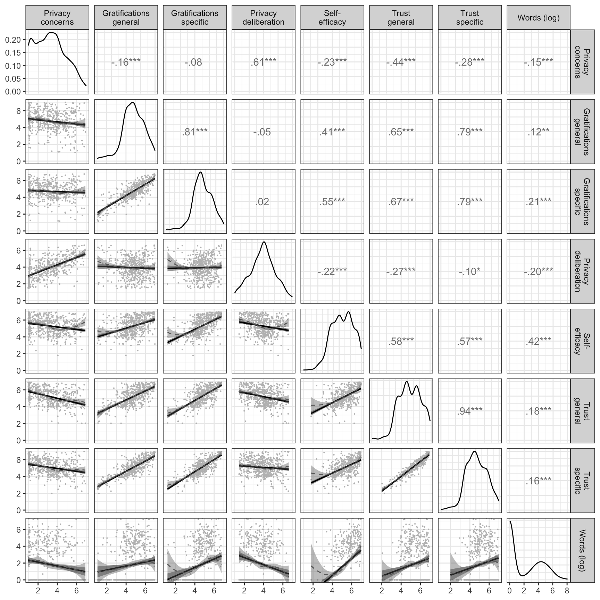
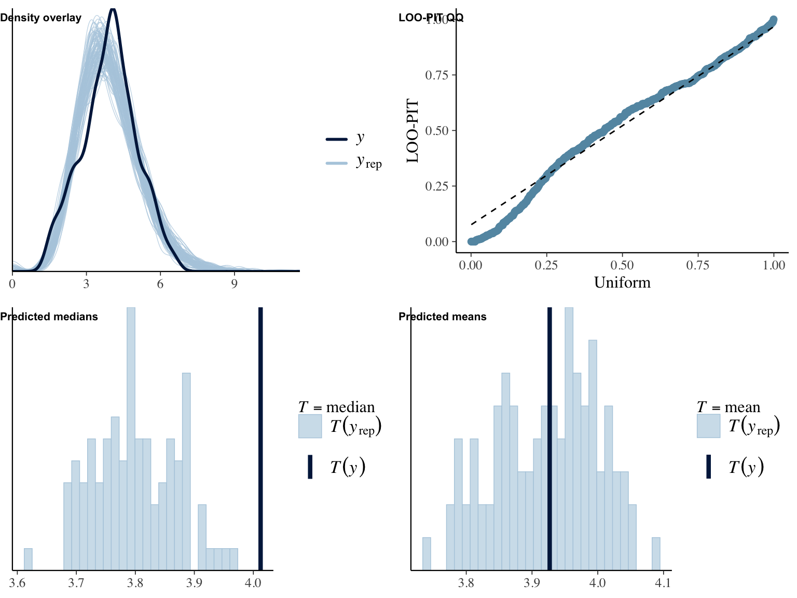
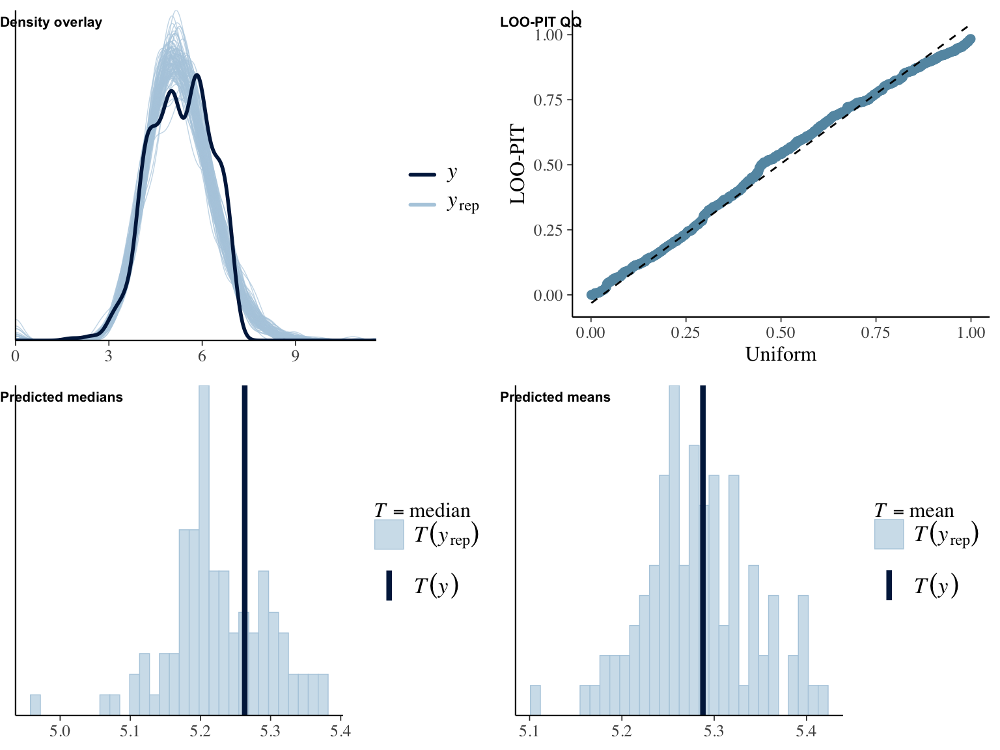
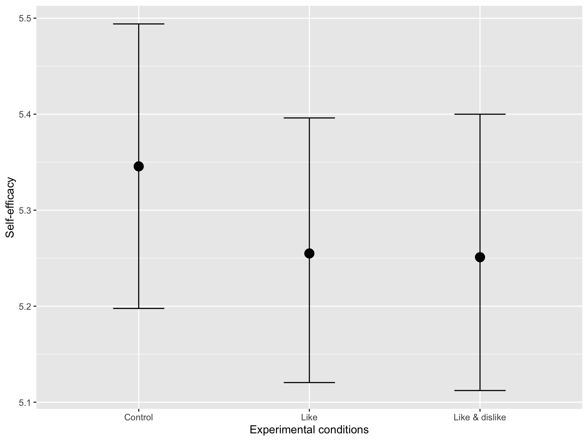
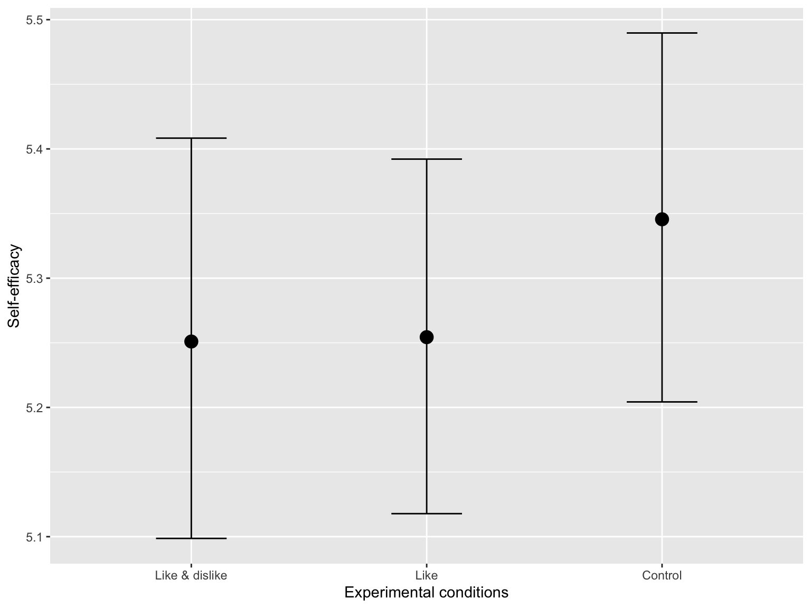
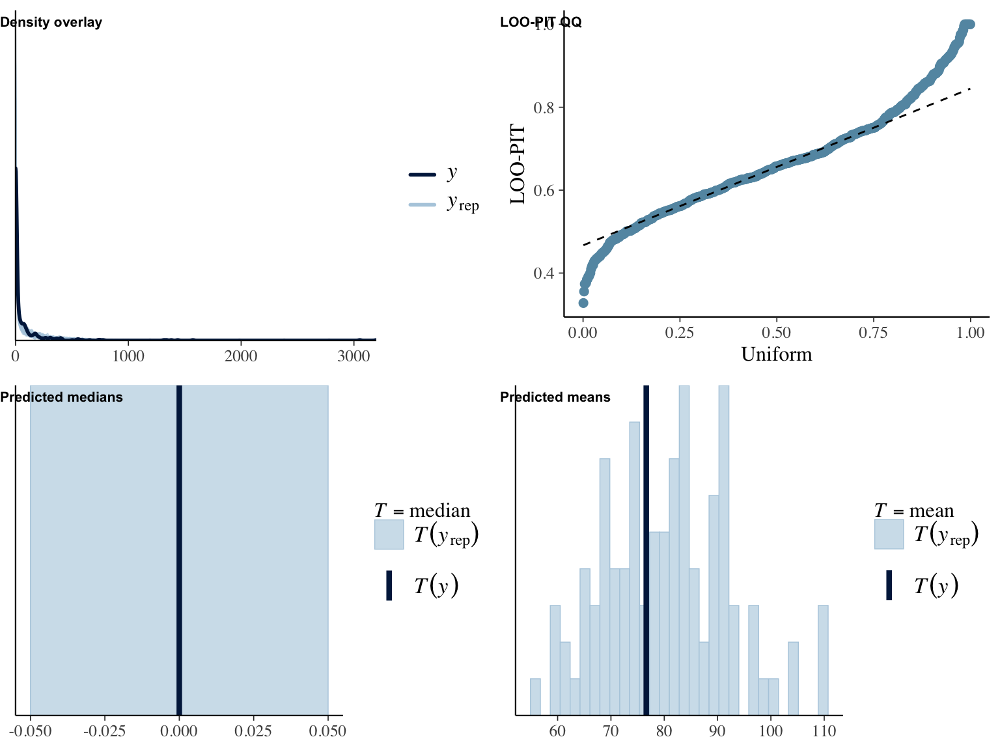
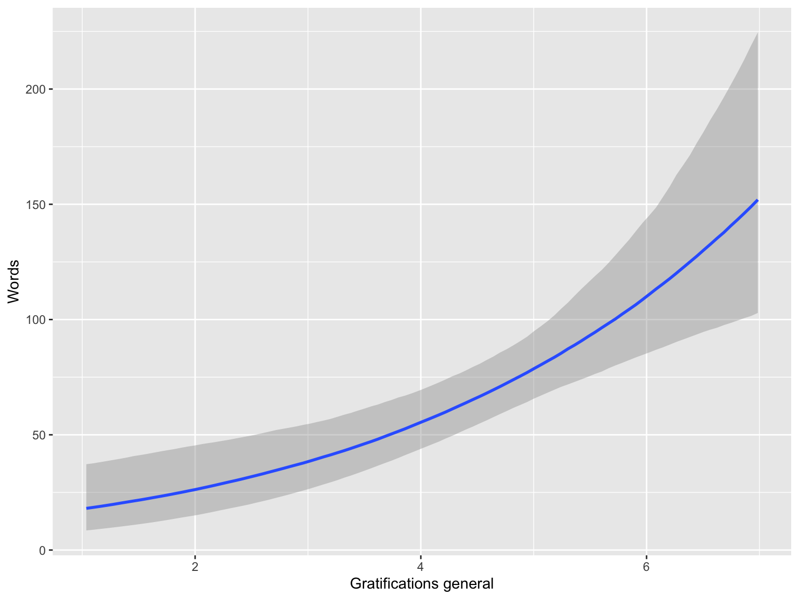
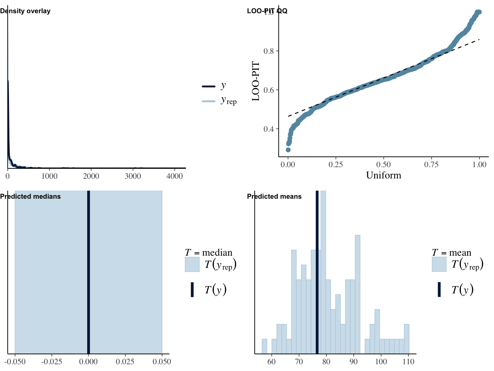
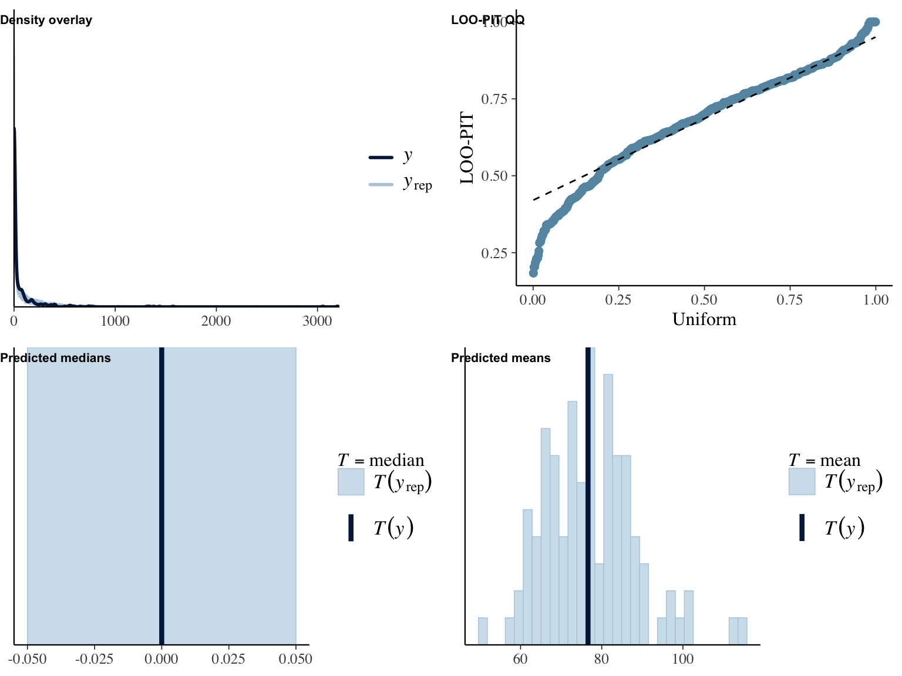
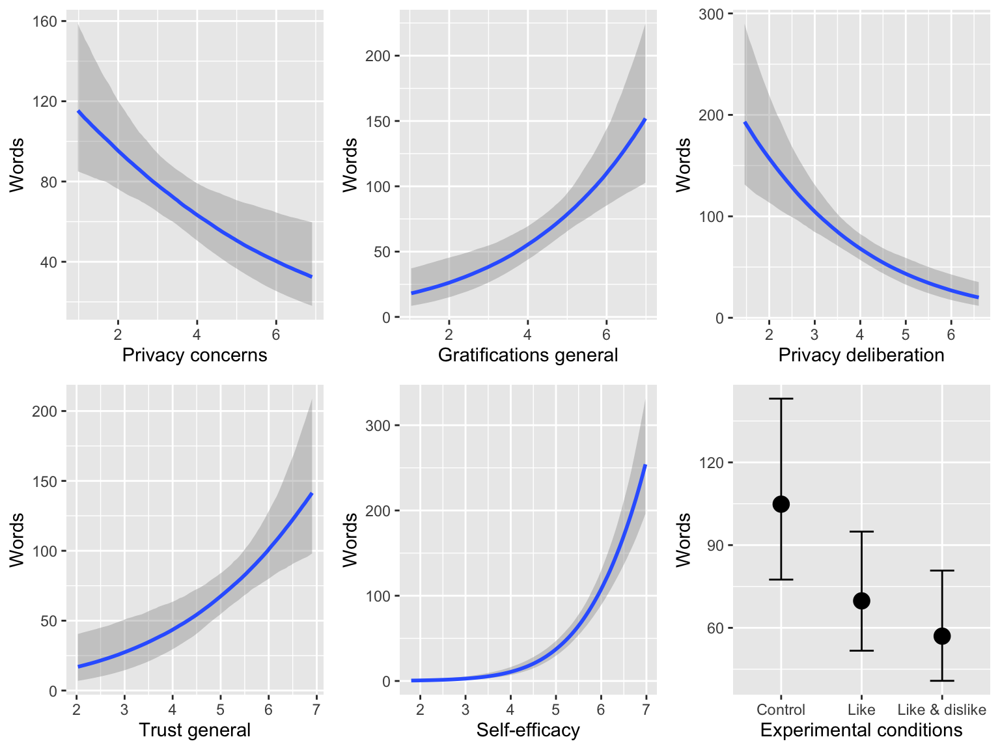

Analyses
In what follows, you can find the analyses for the results reported in the paper. To see the underlying code, click on the button “code”.
Setup
Packages
# install github packages
# devtools::install_github("tdienlin/td@v.0.0.2.3") # uncomment to install
# devtools::install_github("yrosseel/lavaan")
# define packages
packages <-
c(
"brms",
"cowplot",
"devtools",
"english",
"faoutlier",
"GGally",
"gganimate",
"kableExtra",
"knitr",
"lavaan",
"magrittr",
"marginaleffects",
"MVN",
# "psych",
"pwr",
"quanteda",
"semTools",
"tidyverse",
"td"
)
# load packages
lapply(
packages,
library,
character.only = TRUE,
quietly = TRUE
)
# If not wanting to compute all transformations etc., simply load workspace
# load("data/workspace.RData")Custom Functions
# define function to silence result output needed for brms
hush <- function(code) {
sink("/dev/null") # use /dev/null in UNIX
tmp = code
sink()
return(tmp)
}
# plot distributions of items
plot_dist <- function(item, n_rows = 1) {
ggplot(gather(select(d, starts_with(item))), mapping = aes(x = value)) + geom_bar() + facet_wrap(~key, nrow = n_rows) +
theme_bw()
}
get_desc <- function(item, name) {
desc <- select(d, starts_with(item)) %>%
apply(1, mean, na.rm = TRUE) %>%
as.data.frame() %>%
summarise(m = mean(., na.rm = TRUE), sd = sd(., na.rm = TRUE))
assign(paste0("des_", name), desc, envir = .GlobalEnv)
}
# Function to display diagnostics of fitted hurdle models
model_diagnostics <- function(model) {
plot_grid(pp_check(model, type = "dens_overlay", nsamples = 100), pp_check(model, type = "loo_pit_qq", nsamples = 100),
pp_check(model, type = "stat", stat = "median", nsamples = 100), pp_check(model, type = "stat", stat = "mean", nsamples = 100),
labels = c("Density overlay", "LOO-PIT QQ", "Predicted medians", "Predicted means"), ncol = 2, label_size = 8, hjust = 0,
vjust = 0, label_x = 0, label_y = 0.93)
}
# wrapper function that runs relevant analyses for hurdle models
run_hurdles <- function(object, name, outcome, predictor, x_lab, y_lab, plot = FALSE, ...) {
# define define general model
formula_mdl <- formula(paste0(outcome, " ~ 1 + age + male + edu +", predictor))
# define hurdle model
formula_hrdl <- formula(paste0("hu ~ 1 + age + male + edu +", predictor))
# fit model
fit <- hush(brm(bf(formula_mdl, formula_hrdl), data = object, family = hurdle_gamma(), silent = TRUE, refresh = 0))
# export fit
assign(paste0("fit_", name), fit, envir = .GlobalEnv)
# plot model
if (isTRUE(plot)) {
plot(fit, ask = FALSE)
}
# run diagnostics
fit_diagnostics <- model_diagnostics(fit)
plot(fit_diagnostics)
# print summary
fit_summary <- summary(fit)
print(fit_summary)
# calculate slopes
slopes <- cbind(Outcome = outcome, avg_slopes(fit))
# print slopes
cat("\nResults of marginal effects:\n")
print(slopes)
# export as object to environment
assign(paste0("slopes_", name), slopes, envir = .GlobalEnv)
# make figure
fig_res <- conditional_effects(fit, ask = FALSE)
# make figure
fig <- plot(fig_res, plot = FALSE)[[predictor]] + labs(x = x_lab, y = y_lab)
# plot figure
print(fig)
# export as object to environment
assign(paste0("fig_", name), fig, envir = .GlobalEnv)
}Data-Wrangling
# load data
# please note that in a prior step several different data sets were merged using information such as case_taken or IP-addresses. To guarantee the privacy of the participants, these data were deleted after merging.
d_raw <- read_csv("data/data_raw.csv")
# recode variables
d <-
d_raw %>%
dplyr::rename(
"male" = "SD01",
"age" = "SD02_01",
"state" = "SD03",
"edu_fac" = "SD04",
"TR02_01" = "TR01_01",
"TR02_02" = "TR01_05",
"TR02_03" = "TR01_09",
"TR01_01" = "TR01_02",
"TR01_02" = "TR01_03",
"TR01_03" = "TR01_04",
"TR01_04" = "TR01_06",
"TR01_05" = "TR01_07",
"TR01_06" = "TR01_08",
"TR01_07" = "TR01_10",
"TR01_08" = "TR01_11",
"TR01_09" = "TR01_12"
) %>%
mutate(
#general
version = factor(
VE01_01,
labels = c(
"Control",
"Like",
"Like & Dislike"
)
),
version_lkdslk = factor(
version,
levels = c(
"Like & Dislike",
"Like",
"Control"
)
),
version_no = recode(
version,
"Control" = 1,
"Like" = 2,
"Like & Dislike" = 3
),
male = replace_na(
male,
"[3]") %>%
dplyr::recode(
"männlich [1]" = 1,
"weiblich [2]" = 0
),
age_grp = cut(
age,
breaks = c(0, 29, 39, 49, 59, 100),
labels = c("<30", "30-39", "40-49", "50-59", ">59")
),
# contrasts
like = recode(
version,
"Control" = 0,
"Like" = 1,
"Like & Dislike" = 0
),
likedislike = recode(
version,
"Control" = 0,
"Like" = 0,
"Like & Dislike" = 1
),
control = recode(
version,
"Control" = 1,
"Like" = 0,
"Like & Dislike" = 0
),
# recode
edu = recode(
edu_fac,
"Hauptschulabschluss/Volksschulabschluss" = 1,
"Noch Schüler" = 1,
"Realschulabschluss (Mittlere Reife)" = 1,
"Abschluss Polytechnische Oberschule 10. Klasse (vor 1965: 8. Klasse)" = 1,
"Anderer Schulabschluss:" = 1,
"Fachhochschulreife (Abschluss einer Fachoberschule)" = 2,
"Abitur, allgemeine oder fachgebundene Hochschulreife (Gymnasium bzw. EOS)" = 2,
"Hochschulabschluss" = 3),
PC01_03 = 8 - PC01_03,
SE01_05 = 8 - SE01_05,
SE01_06 = 8 - SE01_06,
# behavioral data
words = replace_na(
words,
0
),
self_dis = words + (reactions * 2),
time_read_MIN = time_read / 60,
time_sum_min_t2 = TIME_SUM_t2 / 60,
# take logarithm
words_log = log1p(words)
)
# variable labels
var_names <- c(
"Privacy concerns",
"General gratifications",
"Specific gratifications",
"Privacy deliberation",
"Self-efficacy",
"General trust",
"Specific trust",
"Words log"
)
var_names_breaks <- c(
"Privacy\nconcerns",
"General\ngratifications",
"Specific\ngratifications",
"Privacy\ndeliberation",
"Self-\nefficacy",
"General\ntrust",
"Specific\ntrust",
"Words (log)"
)
# Extract sample characteristics and descriptives.
# sample descriptives t1
n_t1 <- nrow(d)
age_t1_m <- mean(d$age, na.rm = TRUE)
male_t1_m <- mean(d$male, na.rm = TRUE)
college_t1_m <- table(d$edu)[3] / n_t1
# sample descriptives t2
# participants
n_t2 <-
filter(
d,
!is.na(
id_survey_t2
)
) %>%
nrow()
# age
age_t2_m <-
filter(
d,
!is.na(
id_survey_t2
)
) %>%
select(
age
) %>%
mean()
# gender
male_t2_m <-
filter(
d,
!is.na(
id_survey_t2
)
) %>%
select(
male
) %>%
mean(
na.rm = TRUE
)
# education
college_t2_m <-
filter(
d,
!is.na(
id_survey_t2
)
) %>%
select(
edu
) %>%
table() %>%
.[3] / n_t2
# descriptives users
n_users <-
filter(
d,
!is.na(
post_count
)
) %>%
nrow()
# characteristics of posts
n_comments <-
sum(
d$post_count,
na.rm = TRUE
)
n_words <-
sum(
d$words,
na.rm = TRUE
)
n_time <-
sum(
d$time_read_MIN,
na.rm = TRUE
)
n_posts <-
sum(
d$post_count,
na.rm = TRUE
)
# filter unmatched cases, use only completes
d <-
filter(
d,
!is.na(
post_count
) & !is.na(
id_survey_t2
)
)
n_matched <- nrow(d)
# save data file with all participants to compare results
d_all <- dFilter Participants
We filtered participants who answered the questionnaire in less than three minutes, which we considered to be unreasonably fast.
# filter speeders
time_crit <- 3 # minimum time on survey
# count number of speeders
n_speeding <- nrow(filter(d, time_sum_min_t2 < time_crit))
# Deletion of fast respondents
d <- filter(d, time_sum_min_t2 >= time_crit)We inspected the data manually for cases with obvious response patterns. The following cases show extreme response patterns (alongside fast response times), and were hence removed.
# identify response patterns
resp_pattern <- c("ANIEVLK9F2SW", "BN4MAOWZO7W2" # clear response pattern
)
n_resp_pattern <- length(resp_pattern)
# infl_cases_tokens <- infl_cases_tokens[!infl_cases_tokens %in% resp_pattern]
d %>%
filter(case_token %in% resp_pattern) %>%
select(case_token, GR01_01:SE01_06, topics_entered:reactions, -SO01_01, TIME_SUM_t1, TIME_SUM_t2) %>%
kable() %>%
kable_styling("striped") %>%
scroll_box(width = "100%")| case_token | GR01_01 | GR01_02 | GR01_03 | GR01_04 | GR01_05 | GR01_06 | GR01_07 | GR01_08 | GR01_09 | GR01_10 | GR01_11 | GR01_12 | GR01_13 | GR01_14 | GR01_15 | GR02_01 | GR02_02 | GR02_03 | GR02_04 | GR02_05 | PC01_01 | PC01_02 | PC01_03 | PC01_04 | PC01_05 | PC01_06 | PC01_07 | TR02_01 | TR01_01 | TR01_02 | TR01_03 | TR02_02 | TR01_04 | TR01_05 | TR01_06 | TR02_03 | TR01_07 | TR01_08 | TR01_09 | PD01_01 | PD01_02 | PD01_03 | PD01_04 | PD01_05 | SE01_01 | SE01_02 | SE01_03 | SE01_04 | SE01_05 | SE01_06 | topics_entered | posts_read_count | time_read | topic_count | post_count | words | reactions | TIME_SUM_t1 | TIME_SUM_t2 |
|---|---|---|---|---|---|---|---|---|---|---|---|---|---|---|---|---|---|---|---|---|---|---|---|---|---|---|---|---|---|---|---|---|---|---|---|---|---|---|---|---|---|---|---|---|---|---|---|---|---|---|---|---|---|---|---|---|---|---|---|
| BN4MAOWZO7W2 | 7 | 7 | 7 | 7 | 7 | 7 | 7 | 7 | 7 | 7 | 7 | 7 | 7 | 7 | 7 | 7 | 7 | 7 | 7 | 7 | 7 | 7 | 1 | 7 | 7 | 7 | 7 | 4 | 1 | 7 | 1 | 4 | 1 | 1 | 1 | 7 | 7 | 4 | 7 | 7 | 7 | 7 | 7 | 7 | 1 | 1 | 1 | 1 | 7 | 1 | 6 | 27 | 211 | 0 | 1 | 2 | 0 | 37 | 246 |
| ANIEVLK9F2SW | 1 | 1 | 1 | 1 | 1 | 1 | 1 | 1 | 1 | 1 | 1 | 1 | 1 | 1 | 1 | 1 | 1 | 1 | 1 | 1 | 1 | 1 | 1 | 1 | 1 | 1 | 1 | 1 | 1 | 1 | 1 | 1 | 1 | 1 | 1 | 1 | 7 | 1 | 1 | 1 | 1 | 5 | 1 | 1 | 7 | 5 | 7 | 1 | 1 | 7 | 3 | 151 | 1518 | 0 | 2 | 73 | 0 | 66 | 469 |
d %<>%
filter(!case_token %in% resp_pattern)
# sample descriptives final data set
n_final <- nrow(d)
age_final_m <- mean(d$age)
male_final_m <- mean(d$male, na.rm = TRUE)
college_final_m <- table(d$edu)[[3]]/n_finalMeasures
Privacy concerns
Items
Using the participation platform I had …
- … concerns about what happens to my data.
- … concerns about disclosing information about myself.
- … no concerns. (reversed)
- … concerns that others could discover my real identity (i.e. my last and first name).
- … concerns that information about myself could fall into wrong hands.
- … concerns that others could discover what my political views are.
- … concerns about my privacy.
Distributions
# plot distribution
plot_dist(item = "PC01")# extract results
get_desc(item = "PC01", name = "pricon")CFA
name <- "pricon"
model <- "
pri_con =~ PC01_01 + PC01_02 + PC01_03 + PC01_04 + PC01_05 + PC01_06 + PC01_07
"
fit <- lavaan::sem(model = model, data = d, estimator = "MLR", missing = "ML")Model fit:
facval <- fit_tab(fit, reliability = TRUE, scaled = TRUE) %T>%
print()## chisq df pvalue cfi tli rmsea srmr omega alpha ave
## 1 16.1 14 0.307 0.999 0.998 0.0164 0.0104 0.947 0.944 0.724# export factor validity
assign(paste0(name, "_facval"), facval)Factor loadings:
inspect(fit, what = "std") %$%
lambda## pri_cn
## PC01_01 0.931
## PC01_02 0.901
## PC01_03 0.547
## PC01_04 0.890
## PC01_05 0.908
## PC01_06 0.795
## PC01_07 0.928Shows that PC01_03 doesn’t load well. As it’s an inverted item that’s not surprising. Also from a theoretic perspective it’s suboptimal, because it doesn’t explicitly focus on privacy, but just concerns in general. Will be deleted.
CFA 2
model <- "
pri_con =~ PC01_01 + PC01_02 + PC01_04 + PC01_05 + PC01_06 + PC01_07
"
fit <- lavaan::sem(model = model, data = d, estimator = "MLR", missing = "ML")Model fit:
facval <- fit_tab(fit, reliability = TRUE, scaled = TRUE) %T>%
print()## chisq df pvalue cfi tli rmsea srmr omega alpha ave
## 1 11 9 0.273 0.998 0.997 0.0201 0.00963 0.96 0.959 0.799assign(paste0(name, "_facval"), facval)Factor loadings:
inspect(fit, what = "std") %$%
lambda## pri_cn
## PC01_01 0.931
## PC01_02 0.901
## PC01_04 0.891
## PC01_05 0.909
## PC01_06 0.796
## PC01_07 0.926Updated version shows good fit.
Gratifications general
Items
Using the participation platform …
- … had many benefits for me.
- … has paid off for me.
- … was worthwhile.
- … was fun.
- … has brought me further regarding content.
Distributions
plot_dist(item = "GR02")get_desc(item = "GR02", name = "gratsgen")CFA
name <- "gratsgen"
model <- "
grats_gen =~ GR02_01 + GR02_02 + GR02_03 + GR02_04 + GR02_05
"
fit <- lavaan::sem(model = model, data = d, estimator = "MLR", missing = "ML")Model fit:
facval <- fit_tab(fit, reliability = TRUE, scaled = TRUE) %T>%
print()## chisq df pvalue cfi tli rmsea srmr omega alpha ave
## 1 34 5 2.35e-06 0.976 0.951 0.102 0.0193 0.934 0.934 0.741assign(paste0(name, "_facval"), facval)Factor loadings:
inspect(fit, what = "std") %$%
lambda## grts_g
## GR02_01 0.853
## GR02_02 0.908
## GR02_03 0.851
## GR02_04 0.837
## GR02_05 0.848Gratifications specific
Items
Using the participation platform it has been possible for me …
Information
- … to learn things I would not otherwise have noticed.
- … to hear the opinion of others.
- … to learn how other people tick.
Relevance
- … to react to a subject that is very dear to me.
- … to react to a subject that is important to me.
- … to react to a subject that I am affected by.
Political participation
- … to engage politically.
- … to discuss political issues.
- … to pursue my political interest.
Idealism
- … to try to improve society.
- … to advocate to something meaningful.
- … to serve a good purpose.
Extrinsic benefits
- … to do the responsible persons a favor.
- … to soothe my guilty consciences.
- … to fulfil my civic duty.
Distributions
plot_dist(item = "GR01", n_rows = 2)get_desc(item = "GR01", name = "gratsspec")CFA
name <- "gratsspec"
model <- "
grats_inf =~ GR01_01 + GR01_02 + GR01_03
grats_rel =~ GR01_04 + GR01_05 + GR01_06
grats_par =~ GR01_07 + GR01_08 + GR01_09
grats_ide =~ GR01_10 + GR01_11 + GR01_12
grats_ext =~ GR01_13 + GR01_14 + GR01_15
grats_spec =~ grats_inf + grats_rel + grats_par + grats_ide + grats_ext
"
fit <- lavaan::sem(model = model, data = d, estimator = "MLR", missing = "ML")Model fit:
facval <- fit_tab(fit, reliability = TRUE, scaled = TRUE) %T>%
print()## chisq df pvalue cfi tli rmsea srmr omega alpha ave
## 1 270 85 0 0.941 0.928 0.0624 0.0527 0.946 0.933 0.586assign(paste0(name, "_facval"), facval)Factor loadings:
inspect(fit, what = "std") %$%
lambda## grts_n grts_r grts_p grts_d grts_x grts_s
## GR01_01 0.688 0.000 0.000 0.000 0.000 0
## GR01_02 0.819 0.000 0.000 0.000 0.000 0
## GR01_03 0.851 0.000 0.000 0.000 0.000 0
## GR01_04 0.000 0.891 0.000 0.000 0.000 0
## GR01_05 0.000 0.852 0.000 0.000 0.000 0
## GR01_06 0.000 0.704 0.000 0.000 0.000 0
## GR01_07 0.000 0.000 0.826 0.000 0.000 0
## GR01_08 0.000 0.000 0.811 0.000 0.000 0
## GR01_09 0.000 0.000 0.816 0.000 0.000 0
## GR01_10 0.000 0.000 0.000 0.796 0.000 0
## GR01_11 0.000 0.000 0.000 0.882 0.000 0
## GR01_12 0.000 0.000 0.000 0.762 0.000 0
## GR01_13 0.000 0.000 0.000 0.000 0.519 0
## GR01_14 0.000 0.000 0.000 0.000 0.513 0
## GR01_15 0.000 0.000 0.000 0.000 0.848 0Privacy deliberation
Items
Using the participation platform …
- … I have considered whether I could be disadvantaged by writing a comment.
- … I have considered whether I could be advantaged by writing a comment.
- … I have weighed up the advantages and disadvantages of writing a comment.
- … I have thought about consequences of a possible comment.
- … I have considered whether I should write a comment or not.
Distributions
plot_dist(item = "PD01")get_desc(item = "PD01", name = "pridel")CFA
name <- "pridel"
model <- "
pri_delib =~ PD01_01 + PD01_02 + PD01_03 + PD01_04 + PD01_05
"
fit <- lavaan::sem(model = model, data = d, estimator = "MLR", missing = "ML")Model fit:
facval <- fit_tab(fit, reliability = TRUE, scaled = TRUE) %T>%
print()## chisq df pvalue cfi tli rmsea srmr omega alpha ave
## 1 15.6 5 0.00825 0.98 0.96 0.0614 0.0235 0.848 0.843 0.532assign(paste0(name, "_facval"), facval)Factor loadings:
inspect(fit, what = "std") %$%
lambda## pr_dlb
## PD01_01 0.849
## PD01_02 0.653
## PD01_03 0.691
## PD01_04 0.752
## PD01_05 0.656Trust general
Items
1. The other users seemed trustworthy.
2. The operators of the participation platform seemed
trustworthy.
3. The website seemed trustworthy.
Distributions
plot_dist(item = "TR02")
get_desc(item = "TR02", name = "trustgen")CFA
name <- "trustgen"
model <- "
trust =~ TR02_01 + a*TR02_02 + a*TR02_03
"
fit <- lavaan::sem(model = model, data = d, estimator = "MLR", missing = "ML")Model fit:
facval <- fit_tab(fit, reliability = TRUE, scaled = TRUE) %T>%
print()## chisq df pvalue cfi tli rmsea srmr omega alpha ave
## 1 2.07 1 0.15 0.998 0.993 0.0438 0.0125 0.873 0.864 0.701assign(paste0(name, "_facval"), facval)Factor loadings:
inspect(fit, what = "std") %$%
lambda## trust
## TR02_01 0.660
## TR02_02 0.923
## TR02_03 0.898Note that we constrained Items 5 and Item 9 to be equal. Explanation: First, they are theoretically related. Second, not constraining would yield to just-identified model, for which model fit cannot be interpreted meaningfully.
Trust specific
Items
Community
- The comments of other users were useful.
- The other users had good intentions.
- I could rely on the statements of other users.
Provider
- The operators of the participation platform have done a good job.
- It was important to the operators that the users are satisfied with the participation platform.
- I could rely on the statements of the operators of the participation platform.
Information System
- The website worked well.
- I had the impression that my data was necessary for the use of the website.
- I found the website useful.
Distributions
plot_dist(item = "TR01", n_rows = 2)get_desc(item = "TR01", name = "trustspec")CFA
name <- "trust_spec"
model <- "
trust_community =~ TR01_01 + TR01_02 + TR01_03
trust_provider =~ TR01_04 + TR01_05 + TR01_06
trust_system =~ TR01_07 + TR01_08 + TR01_09
trust =~ trust_community + trust_provider + trust_system
"
fit <- lavaan::sem(model = model, data = d, estimator = "MLR", missing = "ML")Model fit:
facval <- fit_tab(fit, reliability = TRUE, scaled = TRUE) %T>%
print()## chisq df pvalue cfi tli rmsea srmr omega alpha ave
## 1 89.1 24 2.02e-09 0.963 0.944 0.0697 0.0351 0.93 0.921 0.613assign(paste0(name, "_facval"), facval)Factor loadings:
inspect(fit, what = "std") %$%
lambda## trst_c trst_p trst_s trust
## TR01_01 0.814 0.000 0.000 0
## TR01_02 0.765 0.000 0.000 0
## TR01_03 0.822 0.000 0.000 0
## TR01_04 0.000 0.884 0.000 0
## TR01_05 0.000 0.779 0.000 0
## TR01_06 0.000 0.793 0.000 0
## TR01_07 0.000 0.000 0.690 0
## TR01_08 0.000 0.000 0.662 0
## TR01_09 0.000 0.000 0.817 0CFA 2
Because there was Heywoodcase, we now also run a model in which the
subdimensions provider and system are
combined.
name <- "trustspec"
model <- "
trust_community =~ TR01_01 + TR01_02 + TR01_03
trust_provider =~ TR01_04 + TR01_05 + TR01_06 + TR01_07 + TR01_08 + TR01_09
trust_spec =~ b*trust_community + b*trust_provider
"
fit <- lavaan::sem(model = model, data = d, estimator = "MLR", missing = "ML")Model fit:
facval <- fit_tab(fit, reliability = TRUE, scaled = TRUE) %T>%
print()## chisq df pvalue cfi tli rmsea srmr omega alpha ave
## 1 99.5 26 1.57e-10 0.958 0.942 0.0711 0.0369 0.931 0.921 0.62assign(paste0(name, "_facval"), facval)Factor loadings:
inspect(fit, what = "std") %$%
lambda## trst_c trst_p trst_s
## TR01_01 0.808 0.000 0
## TR01_02 0.773 0.000 0
## TR01_03 0.821 0.000 0
## TR01_04 0.000 0.877 0
## TR01_05 0.000 0.777 0
## TR01_06 0.000 0.797 0
## TR01_07 0.000 0.705 0
## TR01_08 0.000 0.667 0
## TR01_09 0.000 0.840 0Warning disappears, results show adequate fit.
Self-efficacy
Items
- In principle, I felt able to write a comment.
- I felt technically competent enough to write a comment.
- In terms of the topic, I felt competent enough to express my opinion.
- I found it easy to express my opinion regarding the topic.
- I found it complicated to write a comment. (reversed)
- I was overburdened to write a comment. (reversed)
Distributions
plot_dist(item = "SE01")
get_desc(item = "SE01", name = "selfeff")CFA
name <- "self-eff"
model <- "
self_eff =~ SE01_01 + SE01_02 + SE01_03 + SE01_04 + SE01_05 + SE01_06
"
fit <- lavaan::sem(model = model, data = d, estimator = "MLR", missing = "ML")Model fit:
facval <- fit_tab(fit, reliability = TRUE, scaled = TRUE) %T>%
print()## chisq df pvalue cfi tli rmsea srmr omega alpha ave
## 1 96.1 9 1.11e-16 0.86 0.766 0.132 0.0671 0.851 0.854 0.49assign(paste0(name, "_facval"), facval)Factor loadings:
inspect(fit, what = "std") %$%
lambda## slf_ff
## SE01_01 0.842
## SE01_02 0.689
## SE01_03 0.764
## SE01_04 0.801
## SE01_05 0.528
## SE01_06 0.633Shows significant misfit. We will delete inverted items, while allowing covariations between Items 1 and 2 (tech-oriented) and Items 3 and 4 (topic-oriented).
CFA 2
name <- "selfeff"
model <- "
self_eff_pos =~ SE01_01 + SE01_02 + SE01_03 + SE01_04
SE01_01 ~~ x*SE01_02
SE01_03 ~~ x*SE01_04
"
fit <- lavaan::sem(model = model, data = d, estimator = "MLR", missing = "ML")Model fit:
facval <- fit_tab(fit, reliability = TRUE, scaled = TRUE) %T>%
print()## chisq df pvalue cfi tli rmsea srmr omega alpha ave
## 1 3.23 1 0.0721 0.993 0.957 0.0633 0.0136 0.833 0.862 0.592assign(paste0(name, "_facval"), facval)Factor loadings:
inspect(fit, what = "std") %$%
lambda## slf_f_
## SE01_01 0.828
## SE01_02 0.675
## SE01_03 0.779
## SE01_04 0.787Adapted version shows better and adequate fit.
Communication
Density plot
ggplot(gather(select(d, words)), mapping = aes(x = value)) + geom_density() + facet_wrap(~key, nrow = 1) + theme_bw()
We see that Communication is severely skewed. Let’s calculate how many participants actually commented.
no_words_perc <- d %>%
select(words) %>%
table() %>%
prop.table() %>%
.[1] %>%
unlist()
words_m <- mean(d$words, na.rm = TRUE)Will hence be log-scaled for SEMs.
Communication Logged
ggplot(gather(select(d, words_log)), mapping = aes(x = value)) + geom_density() + facet_wrap(~key, nrow = 1) + theme_bw()
Baseline model
In what follows, please find the results of all variables combined in one model. This model will be used to extract factor scores.
model_baseline <- "
pri_con =~ PC01_01 + PC01_02 + PC01_04 + PC01_05 + PC01_06 + PC01_07
grats_gen =~ GR02_01 + GR02_02 + GR02_03 + GR02_04 + GR02_05
grats_inf =~ GR01_01 + GR01_02 + GR01_03
grats_rel =~ GR01_04 + GR01_05 + GR01_06
grats_par =~ GR01_07 + GR01_08 + GR01_09
grats_ide =~ GR01_10 + GR01_11 + GR01_12
grats_ext =~ GR01_13 + GR01_14 + GR01_15
grats_spec =~ grats_inf + grats_rel + grats_par + grats_ide + grats_ext
pri_delib =~ PD01_01 + PD01_02 + PD01_03 + PD01_04 + PD01_05
trust_gen =~ TR02_01 + TR02_02 + TR02_03
trust_community =~ TR01_01 + TR01_02 + TR01_03
trust_provider =~ TR01_04 + TR01_05 + TR01_06 + TR01_07 + TR01_08 + TR01_09
trust_spec =~ b*trust_community + b*trust_provider
self_eff =~ SE01_01 + SE01_02 + SE01_03 + SE01_04
SE01_01 ~~ x*SE01_02
SE01_03 ~~ x*SE01_04
Words_log =~ words_log
Words_log ~~ a1*pri_con + b1*grats_gen + c1*pri_delib + d1*self_eff + e1*trust_spec + f1*trust_gen + g1*grats_spec
"
fit_baseline <- lavaan::sem(model_baseline, data = d, missing = "ML")
summary(fit_baseline, standardized = TRUE, fit.measures = TRUE)## lavaan 0.6-12 ended normally after 170 iterations
##
## Estimator ML
## Optimization method NLMINB
## Number of model parameters 179
## Number of equality constraints 1
##
## Number of observations 559
## Number of missing patterns 3
##
## Model Test User Model:
##
## Test statistic 3226.527
## Degrees of freedom 1046
## P-value (Chi-square) 0.000
##
## Model Test Baseline Model:
##
## Test statistic 22544.020
## Degrees of freedom 1128
## P-value 0.000
##
## User Model versus Baseline Model:
##
## Comparative Fit Index (CFI) 0.898
## Tucker-Lewis Index (TLI) 0.890
##
## Loglikelihood and Information Criteria:
##
## Loglikelihood user model (H0) -37707.046
## Loglikelihood unrestricted model (H1) -36093.783
##
## Akaike (AIC) 75770.093
## Bayesian (BIC) 76540.147
## Sample-size adjusted Bayesian (BIC) 75975.089
##
## Root Mean Square Error of Approximation:
##
## RMSEA 0.061
## 90 Percent confidence interval - lower 0.059
## 90 Percent confidence interval - upper 0.063
## P-value RMSEA <= 0.05 0.000
##
## Standardized Root Mean Square Residual:
##
## SRMR 0.064
##
## Parameter Estimates:
##
## Standard errors Standard
## Information Observed
## Observed information based on Hessian
##
## Latent Variables:
## Estimate Std.Err z-value P(>|z|) Std.lv Std.all
## pri_con =~
## PC01_01 1.000 1.602 0.929
## PC01_02 0.994 0.027 36.766 0.000 1.592 0.901
## PC01_04 0.977 0.027 35.598 0.000 1.565 0.892
## PC01_05 1.002 0.026 38.006 0.000 1.605 0.910
## PC01_06 0.855 0.032 26.996 0.000 1.369 0.798
## PC01_07 0.996 0.025 40.261 0.000 1.595 0.925
## grats_gen =~
## GR02_01 1.000 1.130 0.842
## GR02_02 1.119 0.040 28.040 0.000 1.265 0.893
## GR02_03 1.029 0.040 25.987 0.000 1.163 0.869
## GR02_04 0.988 0.039 25.063 0.000 1.117 0.850
## GR02_05 1.071 0.042 25.347 0.000 1.211 0.845
## grats_inf =~
## GR01_01 1.000 0.979 0.696
## GR01_02 1.017 0.062 16.519 0.000 0.996 0.816
## GR01_03 1.113 0.066 16.803 0.000 1.089 0.847
## grats_rel =~
## GR01_04 1.000 1.175 0.891
## GR01_05 0.943 0.034 27.534 0.000 1.108 0.857
## GR01_06 0.878 0.046 19.095 0.000 1.032 0.698
## grats_par =~
## GR01_07 1.000 1.192 0.819
## GR01_08 0.938 0.042 22.086 0.000 1.119 0.816
## GR01_09 0.961 0.043 22.315 0.000 1.146 0.819
## grats_ide =~
## GR01_10 1.000 1.149 0.791
## GR01_11 0.999 0.043 23.256 0.000 1.148 0.884
## GR01_12 0.927 0.048 19.462 0.000 1.065 0.764
## grats_ext =~
## GR01_13 1.000 0.851 0.519
## GR01_14 1.003 0.108 9.324 0.000 0.854 0.510
## GR01_15 1.525 0.144 10.613 0.000 1.298 0.850
## grats_spec =~
## grats_inf 1.000 0.843 0.843
## grats_rel 1.314 0.089 14.744 0.000 0.922 0.922
## grats_par 1.378 0.097 14.188 0.000 0.953 0.953
## grats_ide 1.307 0.095 13.806 0.000 0.938 0.938
## grats_ext 0.807 0.088 9.177 0.000 0.782 0.782
## pri_delib =~
## PD01_01 1.000 1.493 0.866
## PD01_02 0.676 0.041 16.555 0.000 1.010 0.658
## PD01_03 0.704 0.043 16.325 0.000 1.052 0.676
## PD01_04 0.848 0.044 19.138 0.000 1.267 0.743
## PD01_05 0.718 0.045 15.895 0.000 1.072 0.648
## trust_gen =~
## TR02_01 1.000 0.828 0.718
## TR02_02 1.230 0.062 19.737 0.000 1.018 0.885
## TR02_03 1.323 0.066 20.080 0.000 1.095 0.907
## trust_community =~
## TR01_01 1.000 1.105 0.830
## TR01_02 0.779 0.036 21.642 0.000 0.861 0.772
## TR01_03 0.884 0.036 24.806 0.000 0.976 0.832
## trust_provider =~
## TR01_04 1.000 0.991 0.852
## TR01_05 0.895 0.039 23.230 0.000 0.887 0.769
## TR01_06 0.896 0.036 24.771 0.000 0.888 0.804
## TR01_07 0.833 0.041 20.184 0.000 0.825 0.703
## TR01_08 0.859 0.047 18.123 0.000 0.852 0.659
## TR01_09 1.149 0.041 27.868 0.000 1.139 0.851
## trust_spec =~
## trst_cmmnt (b) 1.000 0.870 0.870
## trst_prvdr (b) 1.000 0.970 0.970
## self_eff =~
## SE01_01 1.000 1.135 0.822
## SE01_02 0.808 0.046 17.405 0.000 0.917 0.680
## SE01_03 0.923 0.048 19.104 0.000 1.048 0.781
## SE01_04 0.940 0.047 19.950 0.000 1.067 0.791
## Words_log =~
## words_log 1.000 2.311 1.000
##
## Covariances:
## Estimate Std.Err z-value P(>|z|) Std.lv Std.all
## .SE01_01 ~~
## .SE01_02 (x) 0.115 0.029 3.999 0.000 0.115 0.148
## .SE01_03 ~~
## .SE01_04 (x) 0.115 0.029 3.999 0.000 0.115 0.167
## pri_con ~~
## Words_log (a1) -0.559 0.161 -3.460 0.001 -0.151 -0.151
## grats_gen ~~
## Words_log (b1) 0.298 0.115 2.587 0.010 0.114 0.114
## pri_delib ~~
## Words_log (c1) -0.653 0.160 -4.090 0.000 -0.189 -0.189
## self_eff ~~
## Words_log (d1) 1.016 0.132 7.711 0.000 0.387 0.387
## trust_spec ~~
## Words_log (e1) 0.377 0.101 3.712 0.000 0.170 0.170
## trust_gen ~~
## Words_log (f1) 0.327 0.087 3.749 0.000 0.171 0.171
## grats_spec ~~
## Words_log (g1) 0.426 0.089 4.769 0.000 0.224 0.224
## pri_con ~~
## grats_gen -0.284 0.082 -3.458 0.001 -0.157 -0.157
## grats_spc -0.109 0.060 -1.823 0.068 -0.083 -0.083
## pri_delib 1.356 0.131 10.331 0.000 0.567 0.567
## trust_gen -0.557 0.069 -8.095 0.000 -0.420 -0.420
## trust_spc -0.448 0.074 -6.069 0.000 -0.291 -0.291
## self_eff -0.384 0.088 -4.351 0.000 -0.211 -0.211
## grats_gen ~~
## grats_spc 0.734 0.071 10.356 0.000 0.787 0.787
## pri_delib -0.073 0.080 -0.911 0.362 -0.043 -0.043
## trust_gen 0.573 0.057 9.983 0.000 0.612 0.612
## trust_spc 0.843 0.067 12.532 0.000 0.776 0.776
## self_eff 0.464 0.066 6.995 0.000 0.362 0.362
## grats_spec ~~
## pri_delib 0.011 0.059 0.193 0.847 0.009 0.009
## trust_gen 0.450 0.050 9.033 0.000 0.659 0.659
## trust_spc 0.631 0.061 10.435 0.000 0.797 0.797
## self_eff 0.496 0.059 8.427 0.000 0.530 0.530
## pri_delib ~~
## trust_gen -0.313 0.063 -4.945 0.000 -0.253 -0.253
## trust_spc -0.142 0.071 -2.006 0.045 -0.099 -0.099
## self_eff -0.335 0.087 -3.865 0.000 -0.197 -0.197
## trust_gen ~~
## trust_spc 0.761 0.061 12.456 0.000 0.956 0.956
## self_eff 0.496 0.056 8.870 0.000 0.527 0.527
## trust_spec ~~
## self_eff 0.593 0.062 9.616 0.000 0.543 0.543
##
## Intercepts:
## Estimate Std.Err z-value P(>|z|) Std.lv Std.all
## .PC01_01 3.293 0.073 45.160 0.000 3.293 1.910
## .PC01_02 3.327 0.075 44.525 0.000 3.327 1.883
## .PC01_04 3.222 0.074 43.395 0.000 3.222 1.835
## .PC01_05 3.263 0.075 43.748 0.000 3.263 1.850
## .PC01_06 3.004 0.073 41.410 0.000 3.004 1.751
## .PC01_07 3.224 0.073 44.188 0.000 3.224 1.869
## .GR02_01 4.281 0.057 75.413 0.000 4.281 3.190
## .GR02_02 4.596 0.060 76.742 0.000 4.596 3.246
## .GR02_03 5.131 0.057 90.628 0.000 5.131 3.833
## .GR02_04 5.089 0.056 91.559 0.000 5.089 3.873
## .GR02_05 4.692 0.061 77.446 0.000 4.692 3.276
## .GR01_01 4.878 0.059 82.009 0.000 4.878 3.469
## .GR01_02 5.436 0.052 105.390 0.000 5.436 4.458
## .GR01_03 5.283 0.054 97.076 0.000 5.283 4.106
## .GR01_04 4.925 0.056 88.264 0.000 4.925 3.733
## .GR01_05 5.086 0.055 93.032 0.000 5.086 3.935
## .GR01_06 4.660 0.063 74.538 0.000 4.660 3.153
## .GR01_07 4.682 0.062 76.077 0.000 4.682 3.218
## .GR01_08 5.066 0.058 87.374 0.000 5.066 3.696
## .GR01_09 4.841 0.059 81.781 0.000 4.841 3.459
## .GR01_10 4.547 0.061 74.048 0.000 4.547 3.132
## .GR01_11 4.964 0.055 90.449 0.000 4.964 3.826
## .GR01_12 4.760 0.059 80.678 0.000 4.760 3.412
## .GR01_13 4.079 0.069 58.781 0.000 4.079 2.486
## .GR01_14 3.039 0.071 42.918 0.000 3.039 1.815
## .GR01_15 4.410 0.065 68.283 0.000 4.410 2.888
## .PD01_01 3.658 0.073 50.136 0.000 3.658 2.121
## .PD01_02 3.352 0.065 51.628 0.000 3.352 2.184
## .PD01_03 4.191 0.066 63.662 0.000 4.191 2.693
## .PD01_04 4.080 0.072 56.578 0.000 4.080 2.393
## .PD01_05 4.351 0.070 62.149 0.000 4.351 2.629
## .TR02_01 4.846 0.049 99.399 0.000 4.846 4.204
## .TR02_02 5.383 0.049 110.608 0.000 5.383 4.678
## .TR02_03 5.390 0.051 105.542 0.000 5.390 4.464
## .TR01_01 4.764 0.056 84.615 0.000 4.764 3.579
## .TR01_02 4.844 0.047 102.690 0.000 4.844 4.343
## .TR01_03 4.615 0.050 92.979 0.000 4.615 3.933
## .TR01_04 5.403 0.049 109.770 0.000 5.403 4.643
## .TR01_05 5.200 0.049 106.547 0.000 5.200 4.506
## .TR01_06 5.129 0.047 109.818 0.000 5.129 4.645
## .TR01_07 5.725 0.050 115.271 0.000 5.725 4.878
## .TR01_08 4.834 0.055 88.376 0.000 4.834 3.738
## .TR01_09 5.179 0.057 91.474 0.000 5.179 3.869
## .SE01_01 5.277 0.058 90.262 0.000 5.277 3.820
## .SE01_02 5.523 0.057 96.673 0.000 5.523 4.092
## .SE01_03 5.224 0.057 92.031 0.000 5.224 3.895
## .SE01_04 5.138 0.057 89.909 0.000 5.138 3.805
## .words_log 1.834 0.098 18.765 0.000 1.834 0.794
## pri_con 0.000 0.000 0.000
## grats_gen 0.000 0.000 0.000
## .grats_inf 0.000 0.000 0.000
## .grats_rel 0.000 0.000 0.000
## .grats_par 0.000 0.000 0.000
## .grats_ide 0.000 0.000 0.000
## .grats_ext 0.000 0.000 0.000
## grats_spec 0.000 0.000 0.000
## pri_delib 0.000 0.000 0.000
## trust_gen 0.000 0.000 0.000
## .trust_communty 0.000 0.000 0.000
## .trust_provider 0.000 0.000 0.000
## trust_spec 0.000 0.000 0.000
## self_eff 0.000 0.000 0.000
## Words_log 0.000 0.000 0.000
##
## Variances:
## Estimate Std.Err z-value P(>|z|) Std.lv Std.all
## .PC01_01 0.406 0.032 12.789 0.000 0.406 0.137
## .PC01_02 0.587 0.042 14.012 0.000 0.587 0.188
## .PC01_04 0.631 0.044 14.286 0.000 0.631 0.205
## .PC01_05 0.534 0.039 13.742 0.000 0.534 0.172
## .PC01_06 1.066 0.068 15.606 0.000 1.066 0.362
## .PC01_07 0.430 0.033 13.038 0.000 0.430 0.145
## .GR02_01 0.524 0.037 13.965 0.000 0.524 0.291
## .GR02_02 0.405 0.033 12.351 0.000 0.405 0.202
## .GR02_03 0.439 0.033 13.207 0.000 0.439 0.245
## .GR02_04 0.480 0.035 13.839 0.000 0.480 0.278
## .GR02_05 0.586 0.042 14.026 0.000 0.586 0.286
## .GR01_01 1.021 0.072 14.106 0.000 1.021 0.516
## .GR01_02 0.496 0.042 11.731 0.000 0.496 0.334
## .GR01_03 0.469 0.045 10.368 0.000 0.469 0.283
## .GR01_04 0.360 0.034 10.461 0.000 0.360 0.207
## .GR01_05 0.443 0.036 12.233 0.000 0.443 0.265
## .GR01_06 1.120 0.074 15.175 0.000 1.120 0.512
## .GR01_07 0.695 0.052 13.414 0.000 0.695 0.328
## .GR01_08 0.628 0.047 13.434 0.000 0.628 0.334
## .GR01_09 0.646 0.049 13.308 0.000 0.646 0.330
## .GR01_10 0.788 0.056 14.000 0.000 0.788 0.374
## .GR01_11 0.367 0.034 10.639 0.000 0.367 0.218
## .GR01_12 0.811 0.056 14.455 0.000 0.811 0.417
## .GR01_13 1.967 0.131 14.976 0.000 1.967 0.731
## .GR01_14 2.075 0.137 15.089 0.000 2.075 0.740
## .GR01_15 0.646 0.097 6.667 0.000 0.646 0.277
## .PD01_01 0.746 0.082 9.140 0.000 0.746 0.251
## .PD01_02 1.337 0.090 14.863 0.000 1.337 0.567
## .PD01_03 1.316 0.092 14.323 0.000 1.316 0.543
## .PD01_04 1.303 0.096 13.632 0.000 1.303 0.448
## .PD01_05 1.590 0.107 14.858 0.000 1.590 0.581
## .TR02_01 0.643 0.043 14.840 0.000 0.643 0.484
## .TR02_02 0.287 0.024 11.764 0.000 0.287 0.217
## .TR02_03 0.258 0.025 10.298 0.000 0.258 0.177
## .TR01_01 0.551 0.044 12.424 0.000 0.551 0.311
## .TR01_02 0.502 0.037 13.668 0.000 0.502 0.404
## .TR01_03 0.424 0.036 11.920 0.000 0.424 0.308
## .TR01_04 0.372 0.028 13.515 0.000 0.372 0.275
## .TR01_05 0.545 0.036 15.231 0.000 0.545 0.409
## .TR01_06 0.431 0.029 14.812 0.000 0.431 0.354
## .TR01_07 0.697 0.044 15.672 0.000 0.697 0.506
## .TR01_08 0.947 0.059 15.953 0.000 0.947 0.566
## .TR01_09 0.495 0.035 13.970 0.000 0.495 0.276
## .SE01_01 0.620 0.053 11.710 0.000 0.620 0.325
## .SE01_02 0.980 0.067 14.736 0.000 0.980 0.538
## .SE01_03 0.701 0.056 12.591 0.000 0.701 0.390
## .SE01_04 0.684 0.054 12.758 0.000 0.684 0.375
## .words_log 0.000 0.000 0.000
## pri_con 2.567 0.177 14.474 0.000 1.000 1.000
## grats_gen 1.278 0.105 12.153 0.000 1.000 1.000
## .grats_inf 0.277 0.038 7.349 0.000 0.290 0.290
## .grats_rel 0.207 0.033 6.239 0.000 0.150 0.150
## .grats_par 0.129 0.031 4.102 0.000 0.091 0.091
## .grats_ide 0.159 0.031 5.121 0.000 0.120 0.120
## .grats_ext 0.282 0.054 5.181 0.000 0.389 0.389
## grats_spec 0.680 0.092 7.416 0.000 1.000 1.000
## pri_delib 2.231 0.185 12.031 0.000 1.000 1.000
## trust_gen 0.685 0.072 9.474 0.000 1.000 1.000
## .trust_communty 0.298 0.037 8.026 0.000 0.244 0.244
## .trust_provider 0.058 0.020 2.951 0.003 0.059 0.059
## trust_spec 0.924 0.072 12.903 0.000 1.000 1.000
## self_eff 1.289 0.116 11.142 0.000 1.000 1.000
## Words_log 5.341 0.319 16.718 0.000 1.000 1.000Descriptive analyses
We first report the factor validity of all variables combined.
# extract model factor scores / predicted values for items & calc means
d_fs <- lavPredict(fit_baseline, type = "ov") %>%
as.data.frame() %>%
mutate(version = d$version, grats_gen_fs = rowMeans(select(., starts_with("GR02"))), grats_spec_fs = rowMeans(select(.,
starts_with("GR01"))), pri_con_fs = rowMeans(select(., starts_with("PC01"))), trust_gen_fs = rowMeans(select(., starts_with("TR02"))),
trust_spec_fs = rowMeans(select(., starts_with("TR01"))), pri_del_fs = rowMeans(select(., starts_with("PD01"))),
self_eff_fs = rowMeans(select(., starts_with("SE01")))) %>%
select(version, pri_con_fs, grats_gen_fs, grats_spec_fs, pri_del_fs, self_eff_fs, trust_gen_fs, trust_spec_fs, words_log)
# combine d with d factor scores
d %<>%
cbind(select(d_fs, -version, -words_log))
# add centered predictors for interaction analyses later
d %<>%
mutate(pri_con_fs_c = scale(pri_con_fs, scale = FALSE), grats_spec_fs_c = scale(grats_spec_fs, scale = FALSE), pri_del_fs_c = scale(pri_del_fs,
scale = FALSE), trust_gen_fs_c = scale(trust_gen_fs, scale = FALSE), self_eff_fs_c = scale(self_eff_fs, scale = FALSE),
male_c = scale(male, scale = FALSE), edu_c = scale(edu, scale = FALSE), age_c = scale(age, scale = FALSE), con_x_del = pri_con_fs_c *
pri_del_fs_c, grats_x_del = grats_spec_fs_c * pri_del_fs_c)
# rename for plotting
d_fs %<>%
set_names(c("version", var_names_breaks))
# means of model predicted values
des <- rbind(des_pricon, des_gratsgen, des_gratsspec, des_pridel, des_trustgen, des_trustspec, des_selfeff)
facval_tab <- rbind(pricon_facval, gratsgen_facval, gratsspec_facval, pridel_facval, selfeff_facval, trustgen_facval, trustspec_facval) %$%
cbind(des[-c(8), ], .) %>%
set_rownames(var_names[-c(8)])
facval_tab %>%
kable() %>%
kable_styling("striped") %>%
scroll_box(width = "100%")| m | sd | chisq | df | pvalue | cfi | tli | rmsea | srmr | omega | alpha | ave | |
|---|---|---|---|---|---|---|---|---|---|---|---|---|
| Privacy concerns | 3.21 | 1.514 | 16.10 | 14 | 0.307 | 0.999 | 0.998 | 0.016 | 0.010 | 0.947 | 0.944 | 0.724 |
| General gratifications | 4.76 | 1.219 | 34.03 | 5 | 0.000 | 0.976 | 0.951 | 0.102 | 0.019 | 0.934 | 0.934 | 0.741 |
| Specific gratifications | 4.71 | 1.019 | 269.77 | 85 | 0.000 | 0.941 | 0.928 | 0.062 | 0.053 | 0.946 | 0.933 | 0.586 |
| Privacy deliberation | 3.93 | 1.285 | 15.55 | 5 | 0.008 | 0.980 | 0.960 | 0.061 | 0.024 | 0.848 | 0.843 | 0.532 |
| Self-efficacy | 5.21 | 1.039 | 3.23 | 1 | 0.072 | 0.993 | 0.957 | 0.063 | 0.014 | 0.833 | 0.862 | 0.592 |
| General trust | 5.08 | 0.942 | 2.07 | 1 | 0.150 | 0.998 | 0.993 | 0.044 | 0.012 | 0.873 | 0.864 | 0.701 |
| Specific trust | 5.25 | 1.118 | 99.48 | 26 | 0.000 | 0.958 | 0.942 | 0.071 | 0.037 | 0.931 | 0.921 | 0.620 |
In what follows, we report zero-order correlations, distributions, and scatterplots of the variables’ factor scores.
corr_plot <- ggpairs(select(d_fs, -version), upper = list(continuous = cor_plot), lower = list(continuous = wrap(td::scat_plot,
coords = c(1, 7, 0, 7)))) + theme_bw()
print(corr_plot)
ggsave("figures/results/cor_plot.png")Power analyses
In what follows, we report power analyses for our study. Please note that we conduct a rudimentary power-analysis, assuming bivariate correlations. To explain, at the time we were not yet aware of the existence of power analyses for multivariate structural equation models.
We first estimate the sample size necessary to find small effects in 95% of all cases.
# estimate pwr-samplesize
pwr.r.test(r = r_sesoi, sig.level = alpha, power = power_desired, alternative = "greater") %T>%
print %$%
n %>%
round(0) -> n_desired##
## approximate correlation power calculation (arctangh transformation)
##
## n = 1077
## r = 0.1
## sig.level = 0.05
## power = 0.95
## alternative = greaterWe then compute the power we have achieved with our finale sample size to detect small effects.
# compute pwr-achieved
pwr.r.test(n = n_final, r = r_sesoi, sig.level = alpha, alternative = "greater") %T>%
print %$%
power %>%
round(2) -> power_achieved##
## approximate correlation power calculation (arctangh transformation)
##
## n = 559
## r = 0.1
## sig.level = 0.05
## power = 0.765
## alternative = greaterWe finally compute what effect size we are likely to find in 95% of all cases given our final sample size.
# estimate pwr-sensitivity
pwr.r.test(n = n_final, power = power_desired, sig.level = alpha, alternative = "greater") %T>%
print %$%
r %>%
round(2) -> r_sensitive##
## approximate correlation power calculation (arctangh transformation)
##
## n = 559
## r = 0.138
## sig.level = 0.05
## power = 0.95
## alternative = greaterAssumptions
Multivariate normal distribution
# create subset of data with all items that were used
items_used <- c("words", "GR02_01", "GR02_02", "GR02_03", "GR02_04", "GR02_05", "PC01_01", "PC01_02", "PC01_04", "PC01_05",
"PC01_06", "PC01_07", "TR01_01", "TR01_02", "TR01_03", "TR01_04", "TR01_05", "TR01_06", "TR01_07", "TR01_08", "TR01_09",
"TR02_01", "TR02_02", "TR02_03", "PD01_01", "PD01_02", "PD01_03", "PD01_04", "PD01_05", "SE01_01", "SE01_02", "SE01_03",
"SE01_04", "male", "age", "edu")
d_sub <- d[, items_used]
# test multivariate normal distribution
mvn_result <- mvn(d_sub, mvnTest = "mardia")
mvn_result$multivariateNormality## Test Statistic p value Result
## 1 Mardia Skewness 27553.2761555743 0 NO
## 2 Mardia Kurtosis 109.282869715688 0 NO
## 3 MVN <NA> <NA> NOShows that multivariate normal distribution is violated. We hence use maximum likelihood estimation with robust standard errors and a Satorra-Bentler scaled test statistic.
Influential cases
[Note: These lines stopped working after some time, potentially due to changes in package.]
In what follows we test for influential cases in the baseline model, to detect potentially corrupt data (e.g., people who provided response patterns). Specifically, we compute Cook’s distance.
cooks_dis <- gCD(d, model_baseline) %T>%
plot()The following ten cases have a particularly strong influence on the baseline model.
infl_cases <- invisible(rownames(print(cooks_dis)))Let’s inspect these cases.
infl_cases_tokens <- d[infl_cases, "case_token"] %>%
as_vector()
d %>%
filter(case_token %in% infl_cases_tokens) %>%
select(case_token, GR01_01:SE01_06, topics_entered:reactions, -SO01_01, TIME_SUM_t1, TIME_SUM_t2) %>%
kable() %>%
kable_styling("striped") %>%
scroll_box(width = "100%")These data do not reveal potential cases of response patterns. Indeed, answer times suggest that respondents were diligent.
Results
Preregistered
Privacy calculus
model <- "
pri_con =~ PC01_01 + PC01_02 + PC01_04 + PC01_05 + PC01_06 + PC01_07
grats_gen =~ GR02_01 + GR02_02 + GR02_03 + GR02_04 + GR02_05
pri_delib =~ PD01_01 + PD01_02 + PD01_03 + PD01_04 + PD01_05
self_eff =~ SE01_01 + SE01_02 + SE01_03 + SE01_04
SE01_01 ~~ x*SE01_02
SE01_03 ~~ x*SE01_04
trust_community =~ TR01_01 + TR01_02 + TR01_03
trust_provider =~ TR01_04 + TR01_05 + TR01_06 + TR01_07 + TR01_08 + TR01_09
trust_spec =~ b*trust_community + b*trust_provider
words_log ~ a1*pri_con + b1*grats_gen + c1*pri_delib + d1*self_eff + e1*trust_spec
# Covariates
words_log + GR02_01 + GR02_02 + GR02_03 + GR02_04 + GR02_05 + PC01_01 + PC01_02 + PC01_04 + PC01_05 + PC01_06 + PC01_07 + TR01_01 + TR01_02 + TR01_03 + TR01_04 + TR01_05 + TR01_06 + TR01_07 + TR01_08 + TR01_09 + PD01_01 + PD01_02 + PD01_03 + PD01_04 + PD01_05 + SE01_01 + SE01_02 + SE01_03 + SE01_04 ~ male + age + edu
# Covariances
male ~~ age + edu
age ~~ edu
"
fit_prereg <- lavaan::sem(model, data = d, estimator = "MLR", missing = "ML")
summary(fit_prereg, fit = TRUE, std = TRUE)## lavaan 0.6-12 ended normally after 357 iterations
##
## Estimator ML
## Optimization method NLMINB
## Number of model parameters 206
## Number of equality constraints 1
##
## Number of observations 559
## Number of missing patterns 4
##
## Model Test User Model:
## Standard Robust
## Test Statistic 1251.395 957.401
## Degrees of freedom 389 389
## P-value (Chi-square) 0.000 0.000
## Scaling correction factor 1.307
## Yuan-Bentler correction (Mplus variant)
##
## Model Test Baseline Model:
##
## Test statistic 13379.428 10044.844
## Degrees of freedom 528 528
## P-value 0.000 0.000
## Scaling correction factor 1.332
##
## User Model versus Baseline Model:
##
## Comparative Fit Index (CFI) 0.933 0.940
## Tucker-Lewis Index (TLI) 0.909 0.919
##
## Robust Comparative Fit Index (CFI) 0.941
## Robust Tucker-Lewis Index (TLI) 0.920
##
## Loglikelihood and Information Criteria:
##
## Loglikelihood user model (H0) -27315.726 -27315.726
## Scaling correction factor 1.238
## for the MLR correction
## Loglikelihood unrestricted model (H1) -26690.028 -26690.028
## Scaling correction factor 1.285
## for the MLR correction
##
## Akaike (AIC) 55041.452 55041.452
## Bayesian (BIC) 55928.312 55928.312
## Sample-size adjusted Bayesian (BIC) 55277.543 55277.543
##
## Root Mean Square Error of Approximation:
##
## RMSEA 0.063 0.051
## 90 Percent confidence interval - lower 0.059 0.048
## 90 Percent confidence interval - upper 0.067 0.055
## P-value RMSEA <= 0.05 0.000 0.297
##
## Robust RMSEA 0.058
## 90 Percent confidence interval - lower 0.054
## 90 Percent confidence interval - upper 0.063
##
## Standardized Root Mean Square Residual:
##
## SRMR 0.050 0.050
##
## Parameter Estimates:
##
## Standard errors Sandwich
## Information bread Observed
## Observed information based on Hessian
##
## Latent Variables:
## Estimate Std.Err z-value P(>|z|) Std.lv Std.all
## pri_con =~
## PC01_01 1.000 1.597 0.926
## PC01_02 0.990 0.027 36.342 0.000 1.581 0.895
## PC01_04 0.972 0.027 35.765 0.000 1.551 0.884
## PC01_05 1.002 0.024 42.565 0.000 1.600 0.907
## PC01_06 0.855 0.038 22.735 0.000 1.364 0.796
## PC01_07 0.994 0.023 43.868 0.000 1.588 0.920
## grats_gen =~
## GR02_01 1.000 1.134 0.845
## GR02_02 1.118 0.033 33.751 0.000 1.267 0.895
## GR02_03 1.018 0.047 21.604 0.000 1.154 0.862
## GR02_04 0.982 0.048 20.506 0.000 1.113 0.847
## GR02_05 1.071 0.040 27.069 0.000 1.214 0.848
## pri_delib =~
## PD01_01 1.000 1.472 0.853
## PD01_02 0.670 0.048 13.882 0.000 0.986 0.642
## PD01_03 0.708 0.055 12.918 0.000 1.043 0.670
## PD01_04 0.842 0.047 17.854 0.000 1.240 0.727
## PD01_05 0.717 0.050 14.346 0.000 1.055 0.638
## self_eff =~
## SE01_01 1.000 1.117 0.809
## SE01_02 0.812 0.057 14.313 0.000 0.907 0.672
## SE01_03 0.933 0.046 20.218 0.000 1.042 0.777
## SE01_04 0.952 0.043 22.275 0.000 1.064 0.788
## trust_community =~
## TR01_01 1.000 1.071 0.823
## TR01_02 0.791 0.041 19.104 0.000 0.847 0.765
## TR01_03 0.885 0.039 22.863 0.000 0.948 0.815
## trust_provider =~
## TR01_04 1.000 1.016 0.864
## TR01_05 0.876 0.040 21.858 0.000 0.890 0.772
## TR01_06 0.855 0.039 22.145 0.000 0.869 0.787
## TR01_07 0.806 0.040 20.174 0.000 0.819 0.698
## TR01_08 0.841 0.052 16.252 0.000 0.854 0.661
## TR01_09 1.122 0.039 28.975 0.000 1.140 0.852
## trust_spec =~
## trst_cmmnt (b) 1.000 0.893 0.893
## trst_prvdr (b) 1.000 0.941 0.941
##
## Regressions:
## Estimate Std.Err z-value P(>|z|) Std.lv Std.all
## words_log ~
## pri_con (a1) -0.055 0.080 -0.683 0.495 -0.088 -0.038
## grats_gen (b1) 0.103 0.172 0.595 0.552 0.116 0.050
## pri_delib (c1) -0.154 0.093 -1.658 0.097 -0.227 -0.098
## self_eff (d1) 0.818 0.152 5.395 0.000 0.913 0.395
## trust_spc (e1) -0.277 0.265 -1.046 0.296 -0.265 -0.114
## male 0.020 0.199 0.098 0.922 0.020 0.004
## age 0.005 0.006 0.805 0.421 0.005 0.033
## edu 0.230 0.117 1.967 0.049 0.230 0.084
## GR02_01 ~
## male -0.127 0.115 -1.098 0.272 -0.127 -0.047
## age 0.000 0.004 0.089 0.929 0.000 0.004
## edu 0.006 0.068 0.082 0.935 0.006 0.004
## GR02_02 ~
## male -0.068 0.120 -0.564 0.572 -0.068 -0.024
## age 0.006 0.004 1.538 0.124 0.006 0.068
## edu -0.078 0.071 -1.108 0.268 -0.078 -0.047
## GR02_03 ~
## male -0.027 0.116 -0.230 0.818 -0.027 -0.010
## age 0.001 0.004 0.303 0.762 0.001 0.013
## edu -0.080 0.067 -1.199 0.230 -0.080 -0.050
## GR02_04 ~
## male 0.027 0.113 0.239 0.811 0.027 0.010
## age 0.005 0.004 1.296 0.195 0.005 0.057
## edu -0.070 0.067 -1.035 0.301 -0.070 -0.045
## GR02_05 ~
## male -0.141 0.123 -1.140 0.254 -0.141 -0.049
## age -0.004 0.004 -0.878 0.380 -0.004 -0.039
## edu 0.014 0.072 0.193 0.847 0.014 0.008
## PC01_01 ~
## male -0.184 0.151 -1.218 0.223 -0.184 -0.053
## age -0.004 0.005 -0.830 0.407 -0.004 -0.037
## edu 0.114 0.087 1.309 0.190 0.114 0.056
## PC01_02 ~
## male -0.304 0.154 -1.976 0.048 -0.304 -0.086
## age -0.008 0.005 -1.674 0.094 -0.008 -0.072
## edu 0.051 0.089 0.577 0.564 0.051 0.025
## PC01_04 ~
## male -0.226 0.152 -1.486 0.137 -0.226 -0.064
## age -0.010 0.005 -1.990 0.047 -0.010 -0.086
## edu 0.117 0.089 1.320 0.187 0.117 0.056
## PC01_05 ~
## male -0.100 0.154 -0.649 0.516 -0.100 -0.028
## age -0.006 0.005 -1.174 0.240 -0.006 -0.051
## edu 0.094 0.090 1.049 0.294 0.094 0.045
## PC01_06 ~
## male -0.110 0.150 -0.734 0.463 -0.110 -0.032
## age -0.005 0.005 -1.065 0.287 -0.005 -0.046
## edu 0.047 0.087 0.540 0.589 0.047 0.023
## PC01_07 ~
## male -0.176 0.150 -1.172 0.241 -0.176 -0.051
## age -0.007 0.005 -1.347 0.178 -0.007 -0.059
## edu 0.086 0.087 0.987 0.324 0.086 0.042
## TR01_01 ~
## male -0.296 0.108 -2.742 0.006 -0.296 -0.114
## age -0.004 0.004 -1.101 0.271 -0.004 -0.047
## edu 0.005 0.061 0.076 0.940 0.005 0.003
## TR01_02 ~
## male -0.139 0.095 -1.464 0.143 -0.139 -0.063
## age -0.002 0.003 -0.557 0.577 -0.002 -0.025
## edu 0.021 0.053 0.385 0.700 0.021 0.016
## TR01_03 ~
## male -0.133 0.099 -1.343 0.179 -0.133 -0.057
## age -0.004 0.003 -1.201 0.230 -0.004 -0.054
## edu -0.006 0.060 -0.098 0.922 -0.006 -0.004
## TR01_04 ~
## male -0.086 0.104 -0.825 0.409 -0.086 -0.036
## age 0.000 0.003 0.114 0.909 0.000 0.005
## edu -0.053 0.058 -0.903 0.366 -0.053 -0.038
## TR01_05 ~
## male -0.043 0.099 -0.429 0.668 -0.043 -0.018
## age 0.001 0.003 0.357 0.721 0.001 0.016
## edu 0.014 0.058 0.241 0.810 0.014 0.010
## TR01_06 ~
## male 0.048 0.096 0.497 0.619 0.048 0.022
## age -0.004 0.003 -1.235 0.217 -0.004 -0.053
## edu 0.021 0.056 0.370 0.712 0.021 0.016
## TR01_07 ~
## male 0.093 0.100 0.924 0.355 0.093 0.039
## age -0.004 0.003 -1.167 0.243 -0.004 -0.050
## edu -0.058 0.058 -0.993 0.321 -0.058 -0.042
## TR01_08 ~
## male 0.028 0.112 0.255 0.799 0.028 0.011
## age 0.003 0.004 0.831 0.406 0.003 0.036
## edu -0.096 0.065 -1.473 0.141 -0.096 -0.062
## TR01_09 ~
## male -0.120 0.115 -1.039 0.299 -0.120 -0.045
## age -0.002 0.004 -0.401 0.688 -0.002 -0.018
## edu -0.148 0.068 -2.182 0.029 -0.148 -0.093
## PD01_01 ~
## male -0.176 0.148 -1.195 0.232 -0.176 -0.051
## age -0.015 0.005 -3.274 0.001 -0.015 -0.137
## edu -0.027 0.085 -0.322 0.748 -0.027 -0.013
## PD01_02 ~
## male -0.118 0.131 -0.900 0.368 -0.118 -0.038
## age -0.014 0.004 -3.439 0.001 -0.014 -0.141
## edu 0.030 0.077 0.384 0.701 0.030 0.016
## PD01_03 ~
## male -0.321 0.132 -2.425 0.015 -0.321 -0.103
## age -0.004 0.004 -1.025 0.306 -0.004 -0.044
## edu 0.065 0.080 0.811 0.418 0.065 0.035
## PD01_04 ~
## male -0.411 0.144 -2.846 0.004 -0.411 -0.120
## age -0.009 0.005 -1.904 0.057 -0.009 -0.082
## edu 0.102 0.085 1.206 0.228 0.102 0.051
## PD01_05 ~
## male -0.205 0.142 -1.441 0.150 -0.205 -0.062
## age -0.012 0.004 -2.698 0.007 -0.012 -0.111
## edu -0.002 0.084 -0.018 0.985 -0.002 -0.001
## SE01_01 ~
## male 0.121 0.118 1.025 0.306 0.121 0.044
## age 0.000 0.004 0.019 0.985 0.000 0.001
## edu 0.207 0.068 3.055 0.002 0.207 0.126
## SE01_02 ~
## male 0.061 0.112 0.541 0.588 0.061 0.022
## age -0.013 0.004 -3.586 0.000 -0.013 -0.151
## edu 0.194 0.066 2.946 0.003 0.194 0.121
## SE01_03 ~
## male 0.196 0.114 1.709 0.087 0.196 0.073
## age 0.001 0.004 0.258 0.796 0.001 0.011
## edu 0.139 0.067 2.073 0.038 0.139 0.087
## SE01_04 ~
## male 0.055 0.115 0.478 0.633 0.055 0.020
## age 0.007 0.004 2.059 0.039 0.007 0.086
## edu 0.122 0.066 1.845 0.065 0.122 0.076
##
## Covariances:
## Estimate Std.Err z-value P(>|z|) Std.lv Std.all
## .SE01_01 ~~
## .SE01_02 (x) 0.107 0.044 2.431 0.015 0.107 0.141
## .SE01_03 ~~
## .SE01_04 (x) 0.107 0.044 2.431 0.015 0.107 0.158
## male ~~
## age 0.757 0.328 2.312 0.021 0.757 0.097
## edu 0.052 0.018 2.966 0.003 0.052 0.125
## age ~~
## edu -1.018 0.547 -1.862 0.063 -1.018 -0.078
## pri_con ~~
## grats_gen -0.279 0.096 -2.909 0.004 -0.154 -0.154
## pri_delib 1.320 0.130 10.120 0.000 0.562 0.562
## self_eff -0.383 0.091 -4.205 0.000 -0.215 -0.215
## trust_spec -0.438 0.082 -5.367 0.000 -0.287 -0.287
## grats_gen ~~
## pri_delib -0.068 0.103 -0.659 0.510 -0.041 -0.041
## self_eff 0.466 0.067 6.985 0.000 0.368 0.368
## trust_spec 0.859 0.072 11.985 0.000 0.793 0.793
## pri_delib ~~
## self_eff -0.324 0.094 -3.443 0.001 -0.197 -0.197
## trust_spec -0.142 0.092 -1.539 0.124 -0.101 -0.101
## self_eff ~~
## trust_spec 0.592 0.061 9.643 0.000 0.554 0.554
##
## Intercepts:
## Estimate Std.Err z-value P(>|z|) Std.lv Std.all
## .PC01_01 3.360 0.292 11.525 0.000 3.360 1.949
## .PC01_02 3.760 0.304 12.368 0.000 3.760 2.128
## .PC01_04 3.562 0.297 11.993 0.000 3.562 2.029
## .PC01_05 3.405 0.304 11.200 0.000 3.405 1.931
## .PC01_06 3.207 0.288 11.128 0.000 3.207 1.870
## .PC01_07 3.452 0.294 11.749 0.000 3.452 2.001
## .GR02_01 4.318 0.224 19.261 0.000 4.318 3.217
## .GR02_02 4.489 0.244 18.372 0.000 4.489 3.170
## .GR02_03 5.239 0.221 23.652 0.000 5.239 3.914
## .GR02_04 4.983 0.221 22.508 0.000 4.983 3.792
## .GR02_05 4.902 0.254 19.325 0.000 4.902 3.422
## .PD01_01 4.495 0.290 15.524 0.000 4.495 2.605
## .PD01_02 4.000 0.248 16.125 0.000 4.000 2.605
## .PD01_03 4.432 0.269 16.447 0.000 4.432 2.847
## .PD01_04 4.507 0.295 15.294 0.000 4.507 2.643
## .PD01_05 4.999 0.276 18.098 0.000 4.999 3.020
## .SE01_01 4.832 0.249 19.391 0.000 4.832 3.500
## .SE01_02 5.737 0.234 24.495 0.000 5.737 4.253
## .SE01_03 4.827 0.226 21.362 0.000 4.827 3.600
## .SE01_04 4.541 0.234 19.413 0.000 4.541 3.365
## .TR01_01 5.084 0.219 23.244 0.000 5.084 3.905
## .TR01_02 4.956 0.189 26.210 0.000 4.956 4.477
## .TR01_03 4.877 0.200 24.388 0.000 4.877 4.192
## .TR01_04 5.524 0.204 27.020 0.000 5.524 4.697
## .TR01_05 5.142 0.197 26.056 0.000 5.142 4.459
## .TR01_06 5.240 0.189 27.798 0.000 5.240 4.748
## .TR01_07 5.960 0.193 30.944 0.000 5.960 5.080
## .TR01_08 4.860 0.218 22.299 0.000 4.860 3.760
## .TR01_09 5.584 0.231 24.200 0.000 5.584 4.174
## .words_log 1.169 0.380 3.078 0.002 1.169 0.506
## male 0.493 0.021 23.296 0.000 0.493 0.986
## age 46.132 0.658 70.151 0.000 46.132 2.967
## edu 1.852 0.036 51.966 0.000 1.852 2.198
## pri_con 0.000 0.000 0.000
## grats_gen 0.000 0.000 0.000
## pri_delib 0.000 0.000 0.000
## self_eff 0.000 0.000 0.000
## .trust_communty 0.000 0.000 0.000
## .trust_provider 0.000 0.000 0.000
## trust_spec 0.000 0.000 0.000
##
## Variances:
## Estimate Std.Err z-value P(>|z|) Std.lv Std.all
## .PC01_01 0.402 0.050 8.070 0.000 0.402 0.135
## .PC01_02 0.578 0.102 5.654 0.000 0.578 0.185
## .PC01_04 0.627 0.077 8.137 0.000 0.627 0.203
## .PC01_05 0.533 0.064 8.353 0.000 0.533 0.171
## .PC01_06 1.068 0.115 9.252 0.000 1.068 0.363
## .PC01_07 0.430 0.065 6.589 0.000 0.430 0.145
## .GR02_01 0.512 0.053 9.679 0.000 0.512 0.284
## .GR02_02 0.383 0.039 9.899 0.000 0.383 0.191
## .GR02_03 0.455 0.073 6.230 0.000 0.455 0.254
## .GR02_04 0.478 0.048 9.959 0.000 0.478 0.277
## .GR02_05 0.568 0.062 9.180 0.000 0.568 0.277
## .PD01_01 0.741 0.111 6.686 0.000 0.741 0.249
## .PD01_02 1.331 0.127 10.457 0.000 1.331 0.565
## .PD01_03 1.301 0.128 10.193 0.000 1.301 0.537
## .PD01_04 1.298 0.147 8.856 0.000 1.298 0.446
## .PD01_05 1.578 0.127 12.379 0.000 1.578 0.576
## .SE01_01 0.621 0.087 7.098 0.000 0.621 0.326
## .SE01_02 0.924 0.118 7.828 0.000 0.924 0.508
## .SE01_03 0.685 0.096 7.149 0.000 0.685 0.381
## .SE01_04 0.665 0.077 8.599 0.000 0.665 0.365
## .TR01_01 0.521 0.065 8.060 0.000 0.521 0.307
## .TR01_02 0.503 0.054 9.345 0.000 0.503 0.410
## .TR01_03 0.445 0.045 9.831 0.000 0.445 0.329
## .TR01_04 0.347 0.035 9.887 0.000 0.347 0.251
## .TR01_05 0.537 0.052 10.265 0.000 0.537 0.404
## .TR01_06 0.459 0.041 11.151 0.000 0.459 0.377
## .TR01_07 0.699 0.056 12.540 0.000 0.699 0.508
## .TR01_08 0.931 0.079 11.764 0.000 0.931 0.558
## .TR01_09 0.469 0.052 8.969 0.000 0.469 0.262
## .words_log 4.442 0.219 20.297 0.000 4.442 0.832
## male 0.250 0.000 817.043 0.000 0.250 1.000
## age 241.747 9.947 24.303 0.000 241.747 1.000
## edu 0.710 0.021 34.591 0.000 0.710 1.000
## pri_con 2.549 0.144 17.666 0.000 1.000 1.000
## grats_gen 1.285 0.114 11.286 0.000 1.000 1.000
## pri_delib 2.168 0.157 13.780 0.000 1.000 1.000
## self_eff 1.248 0.113 11.011 0.000 1.000 1.000
## .trust_communty 0.233 0.043 5.347 0.000 0.203 0.203
## .trust_provider 0.118 0.039 3.057 0.002 0.114 0.114
## trust_spec 0.914 0.067 13.577 0.000 1.000 1.000rsquare_fit_prereg <- inspect(fit_prereg, what = "rsquare")["words"]Results show that there’s only one significant predictor of Communication, being self-efficacy. The other predictors are in the direction as planned, albeit not significant. Trust, however, shows the inverse relation as effect, that is, more trust, less communication.
Effects of popularity cues
Confidence intervals
The easiest way to assess the effect of the experimental manipulation on the variables is by visualizing their means. If 83% confidence intervals don’t overlap, the variables differ significantly across the conditions. One can quickly see that there aren’t any major effects.
# violin plot
fig_fs_m <- ggplot(gather(d_fs, variable, value, -version) %>%
mutate(variable = factor(variable, levels = var_names_breaks)), aes(x = version, y = value, fill = version)) + geom_violin(trim = TRUE) +
stat_summary(fun.y = mean, geom = "point") + stat_summary(fun.data = mean_se, fun.args = list(mult = 1.39), geom = "errorbar",
width = 0.5) + facet_wrap(~variable, nrow = 2) + theme_bw() + theme(axis.title.y = element_blank(), axis.title.x = element_blank(),
plot.title = element_text(hjust = 0.5), panel.spacing = unit(0.9, "lines"), text = element_text(size = 12), legend.position = "none",
legend.title = element_blank()) + coord_cartesian(ylim = c(0, 7)) + scale_fill_brewer(palette = "Greys")
ggsave("figures/results/violin_plot.png", width = 8, height = 6)
fig_fs_m
SEM
In what follows, we also report explicit statistical tests of the differences between the conditions using contrasts.
Like & Like-Dislike vs. Control
model <- "
pri_con =~ PC01_01 + PC01_02 + PC01_04 + PC01_05 + PC01_06 + PC01_07
grats_gen =~ GR02_01 + GR02_02 + GR02_03 + GR02_04 + GR02_05
pri_delib =~ PD01_01 + PD01_02 + PD01_03 + PD01_04 + PD01_05
self_eff =~ SE01_01 + SE01_02 + SE01_03 + SE01_04
SE01_01 ~~ x*SE01_02
SE01_03 ~~ x*SE01_04
trust_community =~ TR01_01 + TR01_02 + TR01_03
trust_provider =~ TR01_04 + TR01_05 + TR01_06 + TR01_07 + TR01_08 + TR01_09
trust_spec =~ b*trust_community + b*trust_provider
pri_con + grats_gen + pri_delib + self_eff + trust_spec ~ like + likedislike
words ~ a*pri_con + b*grats_gen + c*pri_delib + d*self_eff + e*trust_spec + f*like + g*likedislike
# Covariates
words + GR02_01 + GR02_02 + GR02_03 + GR02_04 + GR02_05 + PC01_01 + PC01_02 + PC01_04 + PC01_05 + PC01_06 + PC01_07 + TR01_01 + TR01_02 + TR01_03 + TR01_04 + TR01_05 + TR01_06 + TR01_07 + TR01_08 + TR01_09 + PD01_01 + PD01_02 + PD01_03 + PD01_04 + PD01_05 + SE01_01 + SE01_02 + SE01_03 + SE01_04 ~ male + age + edu
"
fit_lik_ctrl <- lavaan::sem(model = model, data = d, estimator = "MLR", missing = "ML", fixed.x = FALSE)
summary(fit_lik_ctrl, fit = TRUE, std = TRUE)## lavaan 0.6-12 ended normally after 544 iterations
##
## Estimator ML
## Optimization method NLMINB
## Number of model parameters 218
## Number of equality constraints 1
##
## Number of observations 559
## Number of missing patterns 4
##
## Model Test User Model:
## Standard Robust
## Test Statistic 2040.975 1501.443
## Degrees of freedom 448 448
## P-value (Chi-square) 0.000 0.000
## Scaling correction factor 1.359
## Yuan-Bentler correction (Mplus variant)
##
## Model Test Baseline Model:
##
## Test statistic 13359.444 10346.817
## Degrees of freedom 585 585
## P-value 0.000 0.000
## Scaling correction factor 1.291
##
## User Model versus Baseline Model:
##
## Comparative Fit Index (CFI) 0.875 0.892
## Tucker-Lewis Index (TLI) 0.837 0.859
##
## Robust Comparative Fit Index (CFI) 0.886
## Robust Tucker-Lewis Index (TLI) 0.852
##
## Loglikelihood and Information Criteria:
##
## Loglikelihood user model (H0) -30992.126 -30992.126
## Scaling correction factor 1.198
## for the MLR correction
## Loglikelihood unrestricted model (H1) -29971.639 -29971.639
## Scaling correction factor 1.308
## for the MLR correction
##
## Akaike (AIC) 62418.253 62418.253
## Bayesian (BIC) 63357.027 63357.027
## Sample-size adjusted Bayesian (BIC) 62668.164 62668.164
##
## Root Mean Square Error of Approximation:
##
## RMSEA 0.080 0.065
## 90 Percent confidence interval - lower 0.076 0.062
## 90 Percent confidence interval - upper 0.083 0.068
## P-value RMSEA <= 0.05 0.000 0.000
##
## Robust RMSEA 0.076
## 90 Percent confidence interval - lower 0.071
## 90 Percent confidence interval - upper 0.080
##
## Standardized Root Mean Square Residual:
##
## SRMR 0.188 0.188
##
## Parameter Estimates:
##
## Standard errors Sandwich
## Information bread Observed
## Observed information based on Hessian
##
## Latent Variables:
## Estimate Std.Err z-value P(>|z|) Std.lv Std.all
## pri_con =~
## PC01_01 1.000 1.599 0.927
## PC01_02 0.988 0.027 36.236 0.000 1.580 0.895
## PC01_04 0.969 0.027 35.679 0.000 1.550 0.883
## PC01_05 0.999 0.023 42.633 0.000 1.598 0.906
## PC01_06 0.851 0.038 22.659 0.000 1.361 0.793
## PC01_07 0.994 0.023 43.523 0.000 1.590 0.922
## grats_gen =~
## GR02_01 1.000 1.145 0.853
## GR02_02 1.120 0.033 33.623 0.000 1.283 0.906
## GR02_03 0.991 0.046 21.722 0.000 1.136 0.848
## GR02_04 0.958 0.046 20.699 0.000 1.097 0.835
## GR02_05 1.064 0.039 27.145 0.000 1.219 0.851
## pri_delib =~
## PD01_01 1.000 1.443 0.836
## PD01_02 0.679 0.051 13.433 0.000 0.979 0.638
## PD01_03 0.737 0.058 12.621 0.000 1.063 0.683
## PD01_04 0.873 0.049 17.781 0.000 1.260 0.739
## PD01_05 0.740 0.052 14.181 0.000 1.067 0.645
## self_eff =~
## SE01_01 1.000 1.126 0.815
## SE01_02 0.805 0.060 13.447 0.000 0.907 0.671
## SE01_03 0.918 0.051 17.928 0.000 1.034 0.772
## SE01_04 0.939 0.044 21.195 0.000 1.058 0.785
## trust_community =~
## TR01_01 1.000 1.020 0.803
## TR01_02 0.830 0.052 15.957 0.000 0.846 0.769
## TR01_03 0.924 0.048 19.339 0.000 0.942 0.816
## trust_provider =~
## TR01_04 1.000 1.046 0.874
## TR01_05 0.861 0.040 21.775 0.000 0.901 0.778
## TR01_06 0.846 0.041 20.879 0.000 0.885 0.799
## TR01_07 0.792 0.038 21.042 0.000 0.828 0.704
## TR01_08 0.826 0.052 16.000 0.000 0.864 0.667
## TR01_09 1.074 0.038 28.594 0.000 1.123 0.836
## trust_spec =~
## trst_cmmnt (b) 1.000 0.925 0.925
## trst_prvdr (b) 1.000 0.902 0.902
##
## Regressions:
## Estimate Std.Err z-value P(>|z|) Std.lv Std.all
## pri_con ~
## like 0.032 0.163 0.197 0.844 0.020 0.010
## likedislik 0.177 0.169 1.044 0.297 0.111 0.051
## grats_gen ~
## like -0.167 0.120 -1.388 0.165 -0.146 -0.069
## likedislik -0.221 0.122 -1.812 0.070 -0.193 -0.090
## pri_delib ~
## like 0.002 0.159 0.011 0.991 0.001 0.001
## likedislik -0.084 0.169 -0.500 0.617 -0.058 -0.027
## self_eff ~
## like -0.088 0.126 -0.695 0.487 -0.078 -0.037
## likedislik -0.065 0.131 -0.501 0.616 -0.058 -0.027
## trust_spec ~
## like -0.140 0.108 -1.295 0.195 -0.149 -0.071
## likedislik -0.123 0.112 -1.099 0.272 -0.130 -0.060
## words ~
## pri_con (a) 0.283 7.257 0.039 0.969 0.453 0.002
## grats_gen (b) 1.000 1.145 0.005
## pri_delib (c) -17.886 7.922 -2.258 0.024 -25.805 -0.103
## self_eff (d) 54.809 14.762 3.713 0.000 61.732 0.247
## trust_spec (e) -6.760 10.805 -0.626 0.532 -6.377 -0.026
## like (f) -29.026 26.979 -1.076 0.282 -29.026 -0.055
## likedislik (g) -42.155 27.225 -1.548 0.122 -42.155 -0.078
## male -10.327 23.349 -0.442 0.658 -10.327 -0.021
## age 0.341 0.558 0.611 0.541 0.341 0.021
## edu 12.219 15.228 0.802 0.422 12.219 0.041
## GR02_01 ~
## male -0.130 0.116 -1.129 0.259 -0.130 -0.049
## age 0.000 0.004 0.078 0.937 0.000 0.003
## edu 0.003 0.069 0.050 0.960 0.003 0.002
## GR02_02 ~
## male -0.072 0.120 -0.600 0.548 -0.072 -0.025
## age 0.006 0.004 1.529 0.126 0.006 0.067
## edu -0.081 0.071 -1.143 0.253 -0.081 -0.048
## GR02_03 ~
## male -0.030 0.115 -0.263 0.792 -0.030 -0.011
## age 0.001 0.004 0.292 0.771 0.001 0.013
## edu -0.082 0.067 -1.231 0.218 -0.082 -0.052
## GR02_04 ~
## male 0.023 0.113 0.206 0.836 0.023 0.009
## age 0.005 0.004 1.287 0.198 0.005 0.056
## edu -0.072 0.067 -1.064 0.287 -0.072 -0.046
## GR02_05 ~
## male -0.145 0.123 -1.173 0.241 -0.145 -0.051
## age -0.004 0.004 -0.890 0.374 -0.004 -0.040
## edu 0.012 0.073 0.161 0.872 0.012 0.007
## PC01_01 ~
## male -0.180 0.151 -1.192 0.233 -0.180 -0.052
## age -0.004 0.005 -0.795 0.427 -0.004 -0.035
## edu 0.119 0.087 1.361 0.173 0.119 0.058
## PC01_02 ~
## male -0.300 0.154 -1.951 0.051 -0.300 -0.085
## age -0.008 0.005 -1.643 0.100 -0.008 -0.070
## edu 0.056 0.089 0.624 0.533 0.056 0.026
## PC01_04 ~
## male -0.223 0.152 -1.464 0.143 -0.223 -0.063
## age -0.009 0.005 -1.959 0.050 -0.009 -0.084
## edu 0.121 0.089 1.370 0.171 0.121 0.058
## PC01_05 ~
## male -0.096 0.154 -0.623 0.533 -0.096 -0.027
## age -0.006 0.005 -1.137 0.256 -0.006 -0.049
## edu 0.099 0.090 1.098 0.272 0.099 0.047
## PC01_06 ~
## male -0.107 0.150 -0.712 0.476 -0.107 -0.031
## age -0.005 0.005 -1.034 0.301 -0.005 -0.045
## edu 0.050 0.087 0.582 0.560 0.050 0.025
## PC01_07 ~
## male -0.172 0.150 -1.147 0.251 -0.172 -0.050
## age -0.006 0.005 -1.313 0.189 -0.006 -0.057
## edu 0.090 0.086 1.039 0.299 0.090 0.044
## TR01_01 ~
## male -0.297 0.108 -2.743 0.006 -0.297 -0.117
## age -0.004 0.004 -1.086 0.277 -0.004 -0.048
## edu 0.004 0.061 0.073 0.942 0.004 0.003
## TR01_02 ~
## male -0.139 0.095 -1.461 0.144 -0.139 -0.063
## age -0.002 0.003 -0.543 0.587 -0.002 -0.024
## edu 0.020 0.053 0.384 0.701 0.020 0.016
## TR01_03 ~
## male -0.134 0.100 -1.342 0.180 -0.134 -0.058
## age -0.004 0.003 -1.187 0.235 -0.004 -0.054
## edu -0.006 0.060 -0.100 0.920 -0.006 -0.004
## TR01_04 ~
## male -0.087 0.104 -0.836 0.403 -0.087 -0.036
## age 0.000 0.003 0.129 0.897 0.000 0.006
## edu -0.053 0.058 -0.913 0.361 -0.053 -0.037
## TR01_05 ~
## male -0.043 0.099 -0.436 0.663 -0.043 -0.019
## age 0.001 0.003 0.373 0.709 0.001 0.016
## edu 0.014 0.058 0.240 0.810 0.014 0.010
## TR01_06 ~
## male 0.047 0.096 0.489 0.625 0.047 0.021
## age -0.004 0.003 -1.226 0.220 -0.004 -0.052
## edu 0.020 0.056 0.368 0.713 0.020 0.016
## TR01_07 ~
## male 0.092 0.100 0.913 0.361 0.092 0.039
## age -0.004 0.003 -1.155 0.248 -0.004 -0.049
## edu -0.058 0.058 -0.995 0.320 -0.058 -0.041
## TR01_08 ~
## male 0.028 0.112 0.247 0.805 0.028 0.011
## age 0.003 0.004 0.843 0.399 0.003 0.036
## edu -0.096 0.065 -1.474 0.141 -0.096 -0.062
## TR01_09 ~
## male -0.121 0.115 -1.048 0.295 -0.121 -0.045
## age -0.002 0.004 -0.388 0.698 -0.002 -0.018
## edu -0.148 0.067 -2.192 0.028 -0.148 -0.093
## PD01_01 ~
## male -0.178 0.148 -1.202 0.229 -0.178 -0.051
## age -0.015 0.005 -3.295 0.001 -0.015 -0.138
## edu -0.030 0.085 -0.352 0.725 -0.030 -0.015
## PD01_02 ~
## male -0.119 0.131 -0.904 0.366 -0.119 -0.039
## age -0.014 0.004 -3.454 0.001 -0.014 -0.142
## edu 0.028 0.077 0.361 0.718 0.028 0.015
## PD01_03 ~
## male -0.322 0.132 -2.430 0.015 -0.322 -0.103
## age -0.004 0.004 -1.044 0.297 -0.004 -0.045
## edu 0.063 0.080 0.787 0.431 0.063 0.034
## PD01_04 ~
## male -0.412 0.144 -2.855 0.004 -0.412 -0.121
## age -0.009 0.005 -1.928 0.054 -0.009 -0.083
## edu 0.100 0.085 1.182 0.237 0.100 0.049
## PD01_05 ~
## male -0.206 0.142 -1.448 0.148 -0.206 -0.062
## age -0.012 0.004 -2.714 0.007 -0.012 -0.112
## edu -0.003 0.084 -0.041 0.967 -0.003 -0.002
## SE01_01 ~
## male 0.122 0.118 1.030 0.303 0.122 0.044
## age 0.000 0.004 0.053 0.958 0.000 0.002
## edu 0.210 0.068 3.097 0.002 0.210 0.128
## SE01_02 ~
## male 0.061 0.112 0.547 0.585 0.061 0.023
## age -0.013 0.004 -3.542 0.000 -0.013 -0.149
## edu 0.197 0.066 2.975 0.003 0.197 0.123
## SE01_03 ~
## male 0.196 0.115 1.710 0.087 0.196 0.073
## age 0.001 0.004 0.290 0.772 0.001 0.013
## edu 0.142 0.067 2.110 0.035 0.142 0.089
## SE01_04 ~
## male 0.056 0.115 0.482 0.630 0.056 0.021
## age 0.008 0.004 2.089 0.037 0.008 0.087
## edu 0.125 0.067 1.884 0.060 0.125 0.078
##
## Covariances:
## Estimate Std.Err z-value P(>|z|) Std.lv Std.all
## .SE01_01 ~~
## .SE01_02 (x) 0.110 0.045 2.455 0.014 0.110 0.147
## .SE01_03 ~~
## .SE01_04 (x) 0.110 0.045 2.455 0.014 0.110 0.161
## like ~~
## likedislik -0.109 0.007 -16.483 0.000 -0.109 -0.494
## male 0.006 0.010 0.596 0.551 0.006 0.025
## age 0.364 0.313 1.161 0.246 0.364 0.049
## edu 0.016 0.017 0.916 0.360 0.016 0.039
## likedislike ~~
## male -0.009 0.010 -0.941 0.347 -0.009 -0.040
## age -0.321 0.306 -1.047 0.295 -0.321 -0.044
## edu -0.019 0.017 -1.169 0.243 -0.019 -0.050
## male ~~
## age 0.758 0.328 2.312 0.021 0.758 0.097
## edu 0.052 0.018 2.964 0.003 0.052 0.125
## age ~~
## edu -1.018 0.547 -1.862 0.063 -1.018 -0.078
##
## Intercepts:
## Estimate Std.Err z-value P(>|z|) Std.lv Std.all
## .PC01_01 3.275 0.298 11.003 0.000 3.275 1.899
## .PC01_02 3.676 0.307 11.968 0.000 3.676 2.080
## .PC01_04 3.480 0.300 11.601 0.000 3.480 1.982
## .PC01_05 3.320 0.306 10.833 0.000 3.320 1.882
## .PC01_06 3.134 0.289 10.855 0.000 3.134 1.828
## .PC01_07 3.367 0.299 11.276 0.000 3.367 1.952
## .GR02_01 4.453 0.231 19.295 0.000 4.453 3.318
## .GR02_02 4.640 0.253 18.337 0.000 4.640 3.277
## .GR02_03 5.373 0.230 23.329 0.000 5.373 4.014
## .GR02_04 5.113 0.230 22.194 0.000 5.113 3.890
## .GR02_05 5.046 0.261 19.336 0.000 5.046 3.522
## .PD01_01 4.532 0.308 14.698 0.000 4.532 2.627
## .PD01_02 4.025 0.260 15.495 0.000 4.025 2.622
## .PD01_03 4.459 0.286 15.583 0.000 4.459 2.865
## .PD01_04 4.539 0.312 14.528 0.000 4.539 2.662
## .PD01_05 5.026 0.291 17.286 0.000 5.026 3.037
## .SE01_01 4.872 0.265 18.409 0.000 4.872 3.527
## .SE01_02 5.770 0.245 23.523 0.000 5.770 4.272
## .SE01_03 4.863 0.241 20.182 0.000 4.863 3.631
## .SE01_04 4.579 0.250 18.350 0.000 4.579 3.396
## .TR01_01 5.170 0.231 22.366 0.000 5.170 4.071
## .TR01_02 5.027 0.198 25.420 0.000 5.027 4.571
## .TR01_03 4.956 0.210 23.632 0.000 4.956 4.293
## .TR01_04 5.610 0.213 26.320 0.000 5.610 4.687
## .TR01_05 5.216 0.205 25.500 0.000 5.216 4.508
## .TR01_06 5.312 0.197 26.965 0.000 5.312 4.796
## .TR01_07 6.028 0.201 30.019 0.000 6.028 5.124
## .TR01_08 4.931 0.228 21.663 0.000 4.931 3.805
## .TR01_09 5.676 0.241 23.507 0.000 5.676 4.226
## .words 68.453 30.412 2.251 0.024 68.453 0.274
## like 0.347 0.020 17.237 0.000 0.347 0.729
## likedislike 0.315 0.020 16.027 0.000 0.315 0.678
## male 0.493 0.021 23.297 0.000 0.493 0.986
## age 46.132 0.658 70.151 0.000 46.132 2.967
## edu 1.852 0.036 51.966 0.000 1.852 2.198
## .pri_con 0.000 0.000 0.000
## .grats_gen 0.000 0.000 0.000
## .pri_delib 0.000 0.000 0.000
## .self_eff 0.000 0.000 0.000
## .trust_communty 0.000 0.000 0.000
## .trust_provider 0.000 0.000 0.000
## .trust_spec 0.000 0.000 0.000
##
## Variances:
## Estimate Std.Err z-value P(>|z|) Std.lv Std.all
## .PC01_01 0.395 0.050 7.916 0.000 0.395 0.133
## .PC01_02 0.580 0.103 5.618 0.000 0.580 0.186
## .PC01_04 0.632 0.078 8.071 0.000 0.632 0.205
## .PC01_05 0.539 0.065 8.277 0.000 0.539 0.173
## .PC01_06 1.078 0.117 9.225 0.000 1.078 0.366
## .PC01_07 0.424 0.064 6.634 0.000 0.424 0.142
## .GR02_01 0.486 0.052 9.401 0.000 0.486 0.270
## .GR02_02 0.343 0.036 9.582 0.000 0.343 0.171
## .GR02_03 0.496 0.074 6.722 0.000 0.496 0.277
## .GR02_04 0.513 0.051 10.136 0.000 0.513 0.297
## .GR02_05 0.557 0.061 9.153 0.000 0.557 0.272
## .PD01_01 0.827 0.129 6.405 0.000 0.827 0.278
## .PD01_02 1.344 0.130 10.345 0.000 1.344 0.570
## .PD01_03 1.260 0.131 9.605 0.000 1.260 0.520
## .PD01_04 1.248 0.147 8.468 0.000 1.248 0.429
## .PD01_05 1.553 0.129 12.051 0.000 1.553 0.567
## .SE01_01 0.602 0.093 6.461 0.000 0.602 0.316
## .SE01_02 0.927 0.121 7.682 0.000 0.927 0.508
## .SE01_03 0.698 0.104 6.683 0.000 0.698 0.389
## .SE01_04 0.673 0.080 8.432 0.000 0.673 0.370
## .TR01_01 0.546 0.072 7.594 0.000 0.546 0.339
## .TR01_02 0.488 0.054 8.974 0.000 0.488 0.403
## .TR01_03 0.436 0.045 9.652 0.000 0.436 0.327
## .TR01_04 0.335 0.035 9.613 0.000 0.335 0.234
## .TR01_05 0.527 0.053 9.927 0.000 0.527 0.394
## .TR01_06 0.440 0.041 10.815 0.000 0.440 0.359
## .TR01_07 0.692 0.055 12.510 0.000 0.692 0.500
## .TR01_08 0.923 0.079 11.654 0.000 0.923 0.550
## .TR01_09 0.522 0.057 9.088 0.000 0.522 0.289
## .words 57411.447 0.004 13273641.380 0.000 57411.447 0.920
## .pri_con 2.551 0.144 17.750 0.000 0.998 0.998
## .grats_gen 1.303 0.113 11.538 0.000 0.993 0.993
## .pri_delib 2.080 0.167 12.434 0.000 0.999 0.999
## .self_eff 1.267 0.115 11.000 0.000 0.999 0.999
## .trust_communty 0.149 0.058 2.573 0.010 0.144 0.144
## .trust_provider 0.204 0.065 3.151 0.002 0.186 0.186
## .trust_spec 0.886 0.069 12.765 0.000 0.996 0.996
## like 0.227 0.006 36.792 0.000 0.227 1.000
## likedislike 0.216 0.007 29.655 0.000 0.216 1.000
## male 0.250 0.000 817.514 0.000 0.250 1.000
## age 241.746 9.947 24.303 0.000 241.746 1.000
## edu 0.710 0.021 34.591 0.000 0.710 1.000No significant effects of popularity cues on privacy calculus.
Like-Dislike & Control vs. Like
model <- "
pri_con =~ PC01_01 + PC01_02 + PC01_04 + PC01_05 + PC01_06 + PC01_07
grats_gen =~ GR02_01 + GR02_02 + GR02_03 + GR02_04 + GR02_05
pri_delib =~ PD01_01 + PD01_02 + PD01_03 + PD01_04 + PD01_05
self_eff =~ SE01_01 + SE01_02 + SE01_03 + SE01_04
SE01_01 ~~ x*SE01_02
SE01_03 ~~ x*SE01_04
trust_community =~ TR01_01 + TR01_02 + TR01_03
trust_provider =~ TR01_04 + TR01_05 + TR01_06 + TR01_07 + TR01_08 + TR01_09
trust_spec =~ b*trust_community + b*trust_provider
pri_con + grats_gen + pri_delib + self_eff + trust_spec + words ~ likedislike + control
# Covariates
words + GR02_01 + GR02_02 + GR02_03 + GR02_04 + GR02_05 + PC01_01 + PC01_02 + PC01_04 + PC01_05 + PC01_06 + PC01_07 + TR01_01 + TR01_02 + TR01_03 + TR01_04 + TR01_05 + TR01_06 + TR01_07 + TR01_08 + TR01_09 + PD01_01 + PD01_02 + PD01_03 + PD01_04 + PD01_05 + SE01_01 + SE01_02 + SE01_03 + SE01_04 ~ male + age + edu
"
fit_lik_ctrl <- lavaan::sem(model = model, data = d, estimator = "MLR", missing = "ML")
summary(fit_lik_ctrl, fit = TRUE, std = TRUE)## lavaan 0.6-12 ended normally after 534 iterations
##
## Estimator ML
## Optimization method NLMINB
## Number of model parameters 209
## Number of equality constraints 1
##
## Used Total
## Number of observations 558 559
## Number of missing patterns 3
##
## Model Test User Model:
## Standard Robust
## Test Statistic 1285.709 945.116
## Degrees of freedom 437 437
## P-value (Chi-square) 0.000 0.000
## Scaling correction factor 1.360
## Yuan-Bentler correction (Mplus variant)
##
## Model Test Baseline Model:
##
## Test statistic 13325.570 10323.740
## Degrees of freedom 585 585
## P-value 0.000 0.000
## Scaling correction factor 1.291
##
## User Model versus Baseline Model:
##
## Comparative Fit Index (CFI) 0.933 0.948
## Tucker-Lewis Index (TLI) 0.911 0.930
##
## Robust Comparative Fit Index (CFI) 0.945
## Robust Tucker-Lewis Index (TLI) 0.926
##
## Loglikelihood and Information Criteria:
##
## Loglikelihood user model (H0) -26491.303 -26491.303
## Scaling correction factor 1.242
## for the MLR correction
## Loglikelihood unrestricted model (H1) -25848.449 -25848.449
## Scaling correction factor 1.324
## for the MLR correction
##
## Akaike (AIC) 53398.606 53398.606
## Bayesian (BIC) 54298.073 54298.073
## Sample-size adjusted Bayesian (BIC) 53637.782 53637.782
##
## Root Mean Square Error of Approximation:
##
## RMSEA 0.059 0.046
## 90 Percent confidence interval - lower 0.055 0.042
## 90 Percent confidence interval - upper 0.063 0.049
## P-value RMSEA <= 0.05 0.000 0.982
##
## Robust RMSEA 0.053
## 90 Percent confidence interval - lower 0.049
## 90 Percent confidence interval - upper 0.058
##
## Standardized Root Mean Square Residual:
##
## SRMR 0.047 0.047
##
## Parameter Estimates:
##
## Standard errors Sandwich
## Information bread Observed
## Observed information based on Hessian
##
## Latent Variables:
## Estimate Std.Err z-value P(>|z|) Std.lv Std.all
## pri_con =~
## PC01_01 1.000 1.595 0.926
## PC01_02 0.990 0.027 36.221 0.000 1.579 0.895
## PC01_04 0.972 0.027 35.690 0.000 1.551 0.884
## PC01_05 1.002 0.024 42.455 0.000 1.598 0.907
## PC01_06 0.855 0.038 22.673 0.000 1.363 0.795
## PC01_07 0.995 0.023 43.756 0.000 1.586 0.920
## grats_gen =~
## GR02_01 1.000 1.135 0.845
## GR02_02 1.117 0.033 33.775 0.000 1.268 0.895
## GR02_03 1.017 0.047 21.639 0.000 1.154 0.862
## GR02_04 0.982 0.048 20.506 0.000 1.114 0.847
## GR02_05 1.071 0.040 27.047 0.000 1.215 0.847
## pri_delib =~
## PD01_01 1.000 1.478 0.856
## PD01_02 0.666 0.048 13.877 0.000 0.984 0.641
## PD01_03 0.703 0.055 12.839 0.000 1.038 0.667
## PD01_04 0.841 0.047 17.756 0.000 1.243 0.728
## PD01_05 0.714 0.050 14.308 0.000 1.055 0.637
## self_eff =~
## SE01_01 1.000 1.112 0.807
## SE01_02 0.811 0.057 14.136 0.000 0.902 0.669
## SE01_03 0.934 0.046 20.112 0.000 1.039 0.775
## SE01_04 0.959 0.044 21.773 0.000 1.067 0.791
## trust_community =~
## TR01_01 1.000 1.074 0.824
## TR01_02 0.788 0.041 19.012 0.000 0.846 0.764
## TR01_03 0.883 0.039 22.783 0.000 0.948 0.815
## trust_provider =~
## TR01_04 1.000 1.017 0.864
## TR01_05 0.874 0.040 21.837 0.000 0.889 0.772
## TR01_06 0.852 0.038 22.188 0.000 0.867 0.787
## TR01_07 0.804 0.040 20.144 0.000 0.818 0.697
## TR01_08 0.840 0.052 16.217 0.000 0.854 0.660
## TR01_09 1.122 0.039 28.852 0.000 1.141 0.852
## trust_spec =~
## trst_cmmnt (b) 1.000 0.892 0.892
## trst_prvdr (b) 1.000 0.942 0.942
##
## Regressions:
## Estimate Std.Err z-value P(>|z|) Std.lv Std.all
## pri_con ~
## likedislike 0.158 0.174 0.904 0.366 0.099 0.046
## control -0.031 0.162 -0.191 0.848 -0.019 -0.009
## grats_gen ~
## likedislike -0.046 0.125 -0.368 0.713 -0.041 -0.019
## control 0.165 0.119 1.384 0.166 0.145 0.069
## pri_delib ~
## likedislike -0.083 0.166 -0.501 0.616 -0.056 -0.026
## control 0.004 0.162 0.027 0.979 0.003 0.001
## self_eff ~
## likedislike 0.007 0.127 0.058 0.954 0.007 0.003
## control 0.083 0.125 0.667 0.505 0.075 0.036
## trust_spec ~
## likedislike 0.015 0.108 0.137 0.891 0.015 0.007
## control 0.166 0.106 1.568 0.117 0.173 0.082
## words ~
## likedislike -9.520 19.548 -0.487 0.626 -9.520 -0.018
## control 33.117 28.926 1.145 0.252 33.117 0.063
## male -8.787 23.401 -0.376 0.707 -8.787 -0.018
## age 0.337 0.558 0.603 0.547 0.337 0.021
## edu 11.740 15.254 0.770 0.442 11.740 0.040
## GR02_01 ~
## male -0.130 0.116 -1.124 0.261 -0.130 -0.048
## age 0.000 0.004 0.083 0.934 0.000 0.004
## edu 0.003 0.069 0.048 0.962 0.003 0.002
## GR02_02 ~
## male -0.071 0.120 -0.592 0.554 -0.071 -0.025
## age 0.006 0.004 1.535 0.125 0.006 0.068
## edu -0.082 0.071 -1.156 0.248 -0.082 -0.049
## GR02_03 ~
## male -0.029 0.116 -0.250 0.802 -0.029 -0.011
## age 0.001 0.004 0.301 0.763 0.001 0.013
## edu -0.084 0.067 -1.264 0.206 -0.084 -0.053
## GR02_04 ~
## male 0.025 0.113 0.219 0.827 0.025 0.009
## age 0.005 0.004 1.297 0.195 0.005 0.057
## edu -0.074 0.067 -1.096 0.273 -0.074 -0.047
## GR02_05 ~
## male -0.144 0.124 -1.165 0.244 -0.144 -0.050
## age -0.004 0.004 -0.884 0.377 -0.004 -0.039
## edu 0.011 0.073 0.147 0.883 0.011 0.006
## PC01_01 ~
## male -0.177 0.150 -1.175 0.240 -0.177 -0.051
## age -0.004 0.005 -0.781 0.435 -0.004 -0.034
## edu 0.114 0.087 1.308 0.191 0.114 0.056
## PC01_02 ~
## male -0.297 0.153 -1.937 0.053 -0.297 -0.084
## age -0.008 0.005 -1.629 0.103 -0.008 -0.070
## edu 0.051 0.089 0.570 0.568 0.051 0.024
## PC01_04 ~
## male -0.220 0.152 -1.448 0.148 -0.220 -0.063
## age -0.009 0.005 -1.946 0.052 -0.009 -0.084
## edu 0.117 0.089 1.320 0.187 0.117 0.056
## PC01_05 ~
## male -0.093 0.154 -0.605 0.545 -0.093 -0.026
## age -0.006 0.005 -1.123 0.261 -0.006 -0.049
## edu 0.094 0.090 1.046 0.296 0.094 0.045
## PC01_06 ~
## male -0.104 0.150 -0.695 0.487 -0.104 -0.030
## age -0.005 0.005 -1.022 0.307 -0.005 -0.044
## edu 0.046 0.087 0.534 0.593 0.046 0.023
## PC01_07 ~
## male -0.169 0.150 -1.130 0.259 -0.169 -0.049
## age -0.006 0.005 -1.299 0.194 -0.006 -0.056
## edu 0.085 0.086 0.987 0.324 0.085 0.042
## TR01_01 ~
## male -0.299 0.109 -2.751 0.006 -0.299 -0.115
## age -0.004 0.004 -1.087 0.277 -0.004 -0.047
## edu 0.005 0.061 0.083 0.934 0.005 0.003
## TR01_02 ~
## male -0.142 0.095 -1.485 0.137 -0.142 -0.064
## age -0.002 0.003 -0.552 0.581 -0.002 -0.025
## edu 0.023 0.053 0.432 0.666 0.023 0.018
## TR01_03 ~
## male -0.136 0.099 -1.369 0.171 -0.136 -0.058
## age -0.004 0.003 -1.197 0.231 -0.004 -0.054
## edu -0.003 0.060 -0.048 0.961 -0.003 -0.002
## TR01_04 ~
## male -0.088 0.104 -0.849 0.396 -0.088 -0.037
## age 0.000 0.003 0.126 0.900 0.000 0.006
## edu -0.052 0.058 -0.891 0.373 -0.052 -0.037
## TR01_05 ~
## male -0.046 0.099 -0.466 0.641 -0.046 -0.020
## age 0.001 0.003 0.361 0.718 0.001 0.016
## edu 0.018 0.058 0.309 0.757 0.018 0.013
## TR01_06 ~
## male 0.044 0.095 0.463 0.644 0.044 0.020
## age -0.004 0.003 -1.241 0.215 -0.004 -0.053
## edu 0.025 0.056 0.442 0.658 0.025 0.019
## TR01_07 ~
## male 0.090 0.100 0.898 0.369 0.090 0.038
## age -0.004 0.003 -1.162 0.245 -0.004 -0.050
## edu -0.055 0.058 -0.952 0.341 -0.055 -0.040
## TR01_08 ~
## male 0.026 0.112 0.231 0.817 0.026 0.010
## age 0.003 0.004 0.837 0.403 0.003 0.036
## edu -0.094 0.065 -1.436 0.151 -0.094 -0.061
## TR01_09 ~
## male -0.123 0.115 -1.063 0.288 -0.123 -0.046
## age -0.002 0.004 -0.391 0.696 -0.002 -0.018
## edu -0.146 0.067 -2.167 0.030 -0.146 -0.092
## PD01_01 ~
## male -0.179 0.148 -1.211 0.226 -0.179 -0.052
## age -0.015 0.005 -3.294 0.001 -0.015 -0.138
## edu -0.028 0.085 -0.335 0.737 -0.028 -0.014
## PD01_02 ~
## male -0.121 0.132 -0.915 0.360 -0.121 -0.039
## age -0.014 0.004 -3.455 0.001 -0.014 -0.142
## edu 0.030 0.077 0.387 0.699 0.030 0.016
## PD01_03 ~
## male -0.323 0.133 -2.434 0.015 -0.323 -0.104
## age -0.004 0.004 -1.041 0.298 -0.004 -0.045
## edu 0.063 0.080 0.789 0.430 0.063 0.034
## PD01_04 ~
## male -0.414 0.145 -2.861 0.004 -0.414 -0.121
## age -0.009 0.005 -1.925 0.054 -0.009 -0.083
## edu 0.101 0.085 1.189 0.234 0.101 0.050
## PD01_05 ~
## male -0.206 0.142 -1.450 0.147 -0.206 -0.062
## age -0.012 0.004 -2.710 0.007 -0.012 -0.112
## edu -0.004 0.084 -0.043 0.966 -0.004 -0.002
## SE01_01 ~
## male 0.119 0.118 1.009 0.313 0.119 0.043
## age 0.000 0.004 0.018 0.985 0.000 0.001
## edu 0.212 0.068 3.114 0.002 0.212 0.129
## SE01_02 ~
## male 0.059 0.112 0.525 0.600 0.059 0.022
## age -0.013 0.004 -3.574 0.000 -0.013 -0.151
## edu 0.198 0.066 2.994 0.003 0.198 0.124
## SE01_03 ~
## male 0.194 0.115 1.691 0.091 0.194 0.072
## age 0.001 0.004 0.256 0.798 0.001 0.011
## edu 0.143 0.067 2.130 0.033 0.143 0.090
## SE01_04 ~
## male 0.053 0.115 0.458 0.647 0.053 0.019
## age 0.007 0.004 2.055 0.040 0.007 0.086
## edu 0.127 0.067 1.906 0.057 0.127 0.079
##
## Covariances:
## Estimate Std.Err z-value P(>|z|) Std.lv Std.all
## .SE01_01 ~~
## .SE01_02 (x) 0.106 0.044 2.442 0.015 0.106 0.140
## .SE01_03 ~~
## .SE01_04 (x) 0.106 0.044 2.442 0.015 0.106 0.158
## .pri_con ~~
## .grats_gen -0.277 0.096 -2.886 0.004 -0.154 -0.154
## .pri_delib 1.331 0.130 10.209 0.000 0.566 0.566
## .self_eff -0.373 0.092 -4.049 0.000 -0.210 -0.210
## .trust_spec -0.432 0.082 -5.288 0.000 -0.284 -0.284
## .words -35.090 18.514 -1.895 0.058 -22.025 -0.088
## .grats_gen ~~
## .pri_delib -0.072 0.103 -0.696 0.486 -0.043 -0.043
## .self_eff 0.466 0.068 6.896 0.000 0.370 0.370
## .trust_spec 0.858 0.071 12.055 0.000 0.794 0.794
## .words 29.463 11.359 2.594 0.009 26.050 0.104
## .pri_delib ~~
## .self_eff -0.326 0.095 -3.420 0.001 -0.199 -0.199
## .trust_spec -0.147 0.093 -1.587 0.113 -0.104 -0.104
## .words -52.044 15.956 -3.262 0.001 -35.229 -0.141
## .self_eff ~~
## .trust_spec 0.586 0.062 9.448 0.000 0.552 0.552
## .words 70.893 17.057 4.156 0.000 63.763 0.256
## .trust_spec ~~
## .words 25.643 7.709 3.327 0.001 26.862 0.108
##
## Intercepts:
## Estimate Std.Err z-value P(>|z|) Std.lv Std.all
## .PC01_01 3.310 0.309 10.719 0.000 3.310 1.921
## .PC01_02 3.711 0.322 11.524 0.000 3.711 2.102
## .PC01_04 3.514 0.316 11.133 0.000 3.514 2.003
## .PC01_05 3.355 0.326 10.307 0.000 3.355 1.904
## .PC01_06 3.165 0.302 10.477 0.000 3.165 1.846
## .PC01_07 3.402 0.313 10.861 0.000 3.402 1.974
## .GR02_01 4.284 0.245 17.518 0.000 4.284 3.189
## .GR02_02 4.453 0.265 16.817 0.000 4.453 3.143
## .GR02_03 5.208 0.242 21.507 0.000 5.208 3.890
## .GR02_04 4.954 0.238 20.845 0.000 4.954 3.768
## .GR02_05 4.867 0.270 17.994 0.000 4.867 3.395
## .PD01_01 4.528 0.306 14.788 0.000 4.528 2.622
## .PD01_02 4.020 0.258 15.611 0.000 4.020 2.616
## .PD01_03 4.457 0.276 16.136 0.000 4.457 2.860
## .PD01_04 4.536 0.302 14.999 0.000 4.536 2.658
## .PD01_05 5.025 0.284 17.675 0.000 5.025 3.033
## .SE01_01 4.791 0.270 17.747 0.000 4.791 3.474
## .SE01_02 5.704 0.250 22.806 0.000 5.704 4.231
## .SE01_03 4.788 0.242 19.803 0.000 4.788 3.573
## .SE01_04 4.501 0.248 18.125 0.000 4.501 3.337
## .TR01_01 5.021 0.230 21.816 0.000 5.021 3.851
## .TR01_02 4.902 0.196 24.949 0.000 4.902 4.427
## .TR01_03 4.816 0.208 23.198 0.000 4.816 4.141
## .TR01_04 5.459 0.215 25.347 0.000 5.459 4.640
## .TR01_05 5.080 0.204 24.870 0.000 5.080 4.411
## .TR01_06 5.179 0.197 26.336 0.000 5.179 4.700
## .TR01_07 5.905 0.200 29.576 0.000 5.905 5.034
## .TR01_08 4.803 0.227 21.189 0.000 4.803 3.715
## .TR01_09 5.511 0.246 22.357 0.000 5.511 4.118
## .words 35.441 39.124 0.906 0.365 35.441 0.142
## .pri_con 0.000 0.000 0.000
## .grats_gen 0.000 0.000 0.000
## .pri_delib 0.000 0.000 0.000
## .self_eff 0.000 0.000 0.000
## .trust_communty 0.000 0.000 0.000
## .trust_provider 0.000 0.000 0.000
## .trust_spec 0.000 0.000 0.000
##
## Variances:
## Estimate Std.Err z-value P(>|z|) Std.lv Std.all
## .PC01_01 0.404 0.050 8.065 0.000 0.404 0.136
## .PC01_02 0.580 0.102 5.669 0.000 0.580 0.186
## .PC01_04 0.627 0.077 8.135 0.000 0.627 0.204
## .PC01_05 0.534 0.064 8.362 0.000 0.534 0.172
## .PC01_06 1.069 0.116 9.256 0.000 1.069 0.364
## .PC01_07 0.431 0.065 6.600 0.000 0.431 0.145
## .GR02_01 0.513 0.053 9.693 0.000 0.513 0.284
## .GR02_02 0.385 0.039 9.899 0.000 0.385 0.192
## .GR02_03 0.455 0.073 6.232 0.000 0.455 0.254
## .GR02_04 0.477 0.048 9.940 0.000 0.477 0.276
## .GR02_05 0.571 0.062 9.215 0.000 0.571 0.278
## .PD01_01 0.730 0.111 6.568 0.000 0.730 0.245
## .PD01_02 1.337 0.127 10.509 0.000 1.337 0.567
## .PD01_03 1.315 0.128 10.234 0.000 1.315 0.542
## .PD01_04 1.295 0.147 8.839 0.000 1.295 0.445
## .PD01_05 1.584 0.128 12.377 0.000 1.584 0.577
## .SE01_01 0.627 0.089 7.051 0.000 0.627 0.329
## .SE01_02 0.929 0.120 7.731 0.000 0.929 0.511
## .SE01_03 0.689 0.097 7.093 0.000 0.689 0.384
## .SE01_04 0.656 0.077 8.517 0.000 0.656 0.361
## .TR01_01 0.519 0.065 8.006 0.000 0.519 0.306
## .TR01_02 0.504 0.054 9.341 0.000 0.504 0.411
## .TR01_03 0.446 0.045 9.812 0.000 0.446 0.329
## .TR01_04 0.346 0.035 9.840 0.000 0.346 0.250
## .TR01_05 0.536 0.052 10.266 0.000 0.536 0.404
## .TR01_06 0.458 0.041 11.131 0.000 0.458 0.377
## .TR01_07 0.701 0.056 12.528 0.000 0.701 0.509
## .TR01_08 0.933 0.079 11.769 0.000 0.933 0.558
## .TR01_09 0.469 0.053 8.925 0.000 0.469 0.262
## .words 62213.596 0.042 1483614.788 0.000 62213.596 0.993
## .pri_con 2.538 0.144 17.582 0.000 0.997 0.997
## .grats_gen 1.279 0.113 11.293 0.000 0.994 0.994
## .pri_delib 2.182 0.158 13.840 0.000 0.999 0.999
## .self_eff 1.236 0.117 10.560 0.000 0.999 0.999
## .trust_communty 0.236 0.044 5.304 0.000 0.205 0.205
## .trust_provider 0.117 0.039 3.019 0.003 0.113 0.113
## .trust_spec 0.911 0.067 13.582 0.000 0.994 0.994No significant effects of popularity cues on privacy calculus.
Exploratory analyses
The bivariate relations showed several strong correlations. People who trusted the providers more also experienced more gratifications (r = .79). In multiple regression, we analze the potential effect of one variable on the outcome while holding all others constant. In this case, I tested whether trust increases communication while holding constant gratifications, privacy concerns, privacy deliberations, and self-efficacy. Given the close theoretical and empirical interrelations between the predictors, this creates an unlikely and artifical scenario. If people say loose trust in a provider, they will likely experience more concerns and less benefits. But it is not even necessary to control for these mediating factors. When trying to analyze the causal effect, it is necessary to control for counfounding variables, but importantly not for mediators (Rohrer 2018). Confunding variables impact both the independent variable and the outcome. Sociodemographic variables are often ideal candidates for confounders. For example, men are generally less concerned about their privacy and post more online. Hence, controlling for gender hence helps isolate the actual causal effect. As a result, I reran the analyses controlling for confounding variables that are not mediators.
Experimental Factors
Words
We first compare likes and likes plus dislikes to the control condition.
run_hurdles(object = d, name = "wrds_ctrl", outcome = "words", predictor = "version", y_lab = "Words", x_lab = "Experimental conditions")
## Family: hurdle_gamma
## Links: mu = log; shape = identity; hu = logit
## Formula: words ~ 1 + age + male + edu + version
## hu ~ 1 + age + male + edu + version
## Data: object (Number of observations: 558)
## Draws: 4 chains, each with iter = 2000; warmup = 1000; thin = 1;
## total post-warmup draws = 4000
##
## Population-Level Effects:
## Estimate Est.Error l-95% CI u-95% CI Rhat Bulk_ESS Tail_ESS
## Intercept 5.63 0.37 4.92 6.38 1.00 6071 3166
## hu_Intercept 1.06 0.36 0.35 1.76 1.00 7720 3080
## age -0.00 0.01 -0.01 0.01 1.00 8466 2662
## male -0.18 0.16 -0.49 0.13 1.00 7283 3259
## edu 0.01 0.09 -0.17 0.19 1.00 7532 2849
## versionLike -0.39 0.18 -0.74 -0.04 1.00 5152 2747
## versionLike&Dislike -0.46 0.20 -0.87 -0.06 1.00 5625 3284
## hu_age -0.01 0.01 -0.02 0.00 1.00 9077 2996
## hu_male -0.06 0.17 -0.40 0.29 1.00 7678 3036
## hu_edu -0.21 0.11 -0.41 -0.00 1.00 8558 3229
## hu_versionLike 0.02 0.21 -0.39 0.44 1.00 5362 2806
## hu_versionLike&Dislike 0.24 0.21 -0.18 0.66 1.00 5800 3099
##
## Family Specific Parameters:
## Estimate Est.Error l-95% CI u-95% CI Rhat Bulk_ESS Tail_ESS
## shape 0.70 0.05 0.60 0.81 1.00 8795 2789
##
## Draws were sampled using sampling(NUTS). For each parameter, Bulk_ESS
## and Tail_ESS are effective sample size measures, and Rhat is the potential
## scale reduction factor on split chains (at convergence, Rhat = 1).
##
## Results of marginal effects:
## Outcome term contrast estimate conf.low conf.high
## 1 words age dY/dX 0.234 -0.807 1.30
## 2 words edu dY/dX 9.995 -6.751 28.23
## 3 words male 1 - 0 -11.036 -41.098 18.12
## 4 words version Like & Dislike - Control -46.914 -89.243 -10.21
## 5 words version Like - Control -34.483 -76.801 2.11
Let’s find out by how much people in like and like plus dislike condition wrote fewer words.
words_m_ctrl <- fig_wrds_ctrl$data %>%
filter(effect1__ == "Control") %>%
select(estimate__)
words_m_lk <- fig_wrds_ctrl$data %>%
filter(effect1__ == "Like") %>%
select(estimate__)
words_m_lkdslk <- fig_wrds_ctrl$data %>%
filter(effect1__ == "Like & Dislike") %>%
select(estimate__)
effect_lk_wrds <- words_m_ctrl - words_m_lk
effect_lkdslk_wrds <- words_m_ctrl - words_m_lkdslk
effect_lk_prcnt <- (effect_lk_wrds/words_m_ctrl) * 100 %>%
round()
effect_lkdlk_prcnt <- (effect_lkdslk_wrds/words_m_ctrl) * 100 %>%
round()Compared to the control condition, participants wrote 44.993 percent fewer words on the platform with likes and dislikes.
We then compare likes and likes plus dislikes to the control condition.
run_hurdles(object = d, name = "wrds_lkdslk", outcome = "words", predictor = "version_lkdslk", y_lab = "Words", x_lab = "Experimental conditions")
## Family: hurdle_gamma
## Links: mu = log; shape = identity; hu = logit
## Formula: words ~ 1 + age + male + edu + version_lkdslk
## hu ~ 1 + age + male + edu + version_lkdslk
## Data: object (Number of observations: 558)
## Draws: 4 chains, each with iter = 2000; warmup = 1000; thin = 1;
## total post-warmup draws = 4000
##
## Population-Level Effects:
## Estimate Est.Error l-95% CI u-95% CI Rhat Bulk_ESS Tail_ESS
## Intercept 5.17 0.37 4.46 5.91 1.00 6871 2657
## hu_Intercept 1.29 0.38 0.56 2.02 1.00 8665 3331
## age -0.00 0.01 -0.01 0.01 1.00 8059 3455
## male -0.18 0.16 -0.50 0.14 1.00 6443 3221
## edu 0.01 0.10 -0.17 0.20 1.00 8164 3362
## version_lkdslkLike 0.07 0.21 -0.34 0.47 1.00 4965 3295
## version_lkdslkControl 0.46 0.21 0.05 0.87 1.00 5205 3207
## hu_age -0.01 0.01 -0.02 0.00 1.00 11171 2905
## hu_male -0.06 0.17 -0.40 0.28 1.00 6598 3154
## hu_edu -0.20 0.11 -0.41 -0.00 1.00 7356 3107
## hu_version_lkdslkLike -0.22 0.21 -0.62 0.21 1.00 4994 3343
## hu_version_lkdslkControl -0.24 0.22 -0.67 0.19 1.00 5518 3602
##
## Family Specific Parameters:
## Estimate Est.Error l-95% CI u-95% CI Rhat Bulk_ESS Tail_ESS
## shape 0.70 0.05 0.59 0.81 1.00 6520 2705
##
## Draws were sampled using sampling(NUTS). For each parameter, Bulk_ESS
## and Tail_ESS are effective sample size measures, and Rhat is the potential
## scale reduction factor on split chains (at convergence, Rhat = 1).
##
## Results of marginal effects:
## Outcome term contrast estimate conf.low conf.high
## 1 words age dY/dX 0.24 -0.806 1.26
## 2 words edu dY/dX 10.14 -7.838 28.60
## 3 words male 1 - 0 -11.42 -42.942 18.22
## 4 words version_lkdslk Control - Like & Dislike 47.41 9.509 91.48
## 5 words version_lkdslk Like - Like & Dislike 13.17 -18.605 42.56Privacy Concerns
We first compare likes and likes plus dislikes to the control condition.
run_hurdles(object = d, name = "pricon_ctrl", outcome = "pri_con_fs", predictor = "version", y_lab = "Privacy concerns",
x_lab = "Experimental conditions")
## Family: hurdle_gamma
## Links: mu = log; shape = identity; hu = logit
## Formula: pri_con_fs ~ 1 + age + male + edu + version
## hu ~ 1 + age + male + edu + version
## Data: object (Number of observations: 558)
## Draws: 4 chains, each with iter = 2000; warmup = 1000; thin = 1;
## total post-warmup draws = 4000
##
## Population-Level Effects:
## Estimate Est.Error l-95% CI u-95% CI Rhat Bulk_ESS Tail_ESS
## Intercept 1.21 0.09 1.04 1.39 1.00 3826 3316
## hu_Intercept -9.73 6.15 -23.64 0.75 1.00 2569 1920
## age -0.00 0.00 -0.00 0.00 1.00 4745 2719
## male -0.06 0.04 -0.14 0.03 1.00 4010 2492
## edu 0.03 0.03 -0.02 0.07 1.00 3583 2947
## versionLike 0.01 0.05 -0.09 0.11 1.00 2841 2809
## versionLike&Dislike 0.06 0.05 -0.05 0.16 1.00 2950 2449
## hu_age 0.00 0.08 -0.16 0.17 1.00 3082 2252
## hu_male -0.17 3.30 -6.78 6.67 1.00 2629 1997
## hu_edu -0.26 1.71 -4.03 2.91 1.00 2907 2422
## hu_versionLike -0.06 4.31 -9.16 9.07 1.00 1799 1388
## hu_versionLike&Dislike -0.39 4.58 -10.60 9.00 1.00 1636 1387
##
## Family Specific Parameters:
## Estimate Est.Error l-95% CI u-95% CI Rhat Bulk_ESS Tail_ESS
## shape 3.95 0.22 3.53 4.42 1.01 3277 2796
##
## Draws were sampled using sampling(NUTS). For each parameter, Bulk_ESS
## and Tail_ESS are effective sample size measures, and Rhat is the potential
## scale reduction factor on split chains (at convergence, Rhat = 1).
##
## Results of marginal effects:
## Outcome term contrast estimate conf.low conf.high
## 1 pri_con_fs age dY/dX -0.00593 -0.0144 0.00264
## 2 pri_con_fs edu dY/dX 0.08457 -0.0802 0.24074
## 3 pri_con_fs male 1 - 0 -0.17715 -0.4538 0.09152
## 4 pri_con_fs version Like & Dislike - Control 0.17530 -0.1563 0.52957
## 5 pri_con_fs version Like - Control 0.03985 -0.2854 0.36448
We then compare likes and likes plus dislikes to the control condition.
run_hurdles(object = d, name = "pricon_lkdslk", outcome = "pri_con_fs", predictor = "version_lkdslk", y_lab = "Privacy concerns",
x_lab = "Experimental conditions")
## Family: hurdle_gamma
## Links: mu = log; shape = identity; hu = logit
## Formula: pri_con_fs ~ 1 + age + male + edu + version_lkdslk
## hu ~ 1 + age + male + edu + version_lkdslk
## Data: object (Number of observations: 558)
## Draws: 4 chains, each with iter = 2000; warmup = 1000; thin = 1;
## total post-warmup draws = 4000
##
## Population-Level Effects:
## Estimate Est.Error l-95% CI u-95% CI Rhat Bulk_ESS Tail_ESS
## Intercept 1.27 0.09 1.10 1.44 1.00 4219 3318
## hu_Intercept -10.36 6.19 -24.17 -0.33 1.00 2120 1873
## age -0.00 0.00 -0.00 0.00 1.00 5176 2991
## male -0.06 0.04 -0.14 0.03 1.00 3641 2581
## edu 0.03 0.02 -0.02 0.08 1.00 3674 3021
## version_lkdslkLike -0.04 0.05 -0.14 0.06 1.00 2836 3195
## version_lkdslkControl -0.05 0.05 -0.16 0.05 1.00 3021 2877
## hu_age 0.01 0.08 -0.15 0.17 1.00 2972 2478
## hu_male -0.17 3.22 -6.90 6.44 1.00 3110 2204
## hu_edu -0.17 1.70 -3.83 3.05 1.00 2765 2238
## hu_version_lkdslkLike 0.19 4.54 -8.95 10.39 1.00 1722 1700
## hu_version_lkdslkControl 0.22 4.74 -10.03 10.35 1.00 1760 1536
##
## Family Specific Parameters:
## Estimate Est.Error l-95% CI u-95% CI Rhat Bulk_ESS Tail_ESS
## shape 3.95 0.23 3.51 4.42 1.00 3446 2475
##
## Draws were sampled using sampling(NUTS). For each parameter, Bulk_ESS
## and Tail_ESS are effective sample size measures, and Rhat is the potential
## scale reduction factor on split chains (at convergence, Rhat = 1).
##
## Results of marginal effects:
## Outcome term contrast estimate conf.low conf.high
## 1 pri_con_fs age dY/dX -0.00589 -0.0147 0.00267
## 2 pri_con_fs edu dY/dX 0.08500 -0.0742 0.24596
## 3 pri_con_fs male 1 - 0 -0.18017 -0.4527 0.08967
## 4 pri_con_fs version_lkdslk Control - Like & Dislike -0.18139 -0.5183 0.16986
## 5 pri_con_fs version_lkdslk Like - Like & Dislike -0.13956 -0.4703 0.20156
Expected Gratifications
We first compare likes and likes plus dislikes to the control condition.
run_hurdles(object = d, name = "grats_ctrl", outcome = "grats_gen_fs", predictor = "version", y_lab = "Gratifications", x_lab = "Experimental conditions")
## Family: hurdle_gamma
## Links: mu = log; shape = identity; hu = logit
## Formula: grats_gen_fs ~ 1 + age + male + edu + version
## hu ~ 1 + age + male + edu + version
## Data: object (Number of observations: 558)
## Draws: 4 chains, each with iter = 2000; warmup = 1000; thin = 1;
## total post-warmup draws = 4000
##
## Population-Level Effects:
## Estimate Est.Error l-95% CI u-95% CI Rhat Bulk_ESS Tail_ESS
## Intercept 1.60 0.05 1.50 1.69 1.00 3933 3579
## hu_Intercept -10.09 6.36 -24.45 0.27 1.00 2116 2017
## age 0.00 0.00 -0.00 0.00 1.00 4163 2897
## male -0.01 0.02 -0.06 0.03 1.00 3634 3119
## edu -0.01 0.01 -0.04 0.02 1.00 3535 3015
## versionLike -0.04 0.03 -0.09 0.02 1.00 3067 2801
## versionLike&Dislike -0.04 0.03 -0.10 0.01 1.00 2935 2683
## hu_age 0.01 0.08 -0.15 0.19 1.00 3120 2469
## hu_male -0.15 3.09 -6.48 5.96 1.00 2577 2089
## hu_edu -0.24 1.77 -4.23 3.13 1.00 3137 2259
## hu_versionLike 0.04 4.61 -9.40 9.82 1.00 1840 1352
## hu_versionLike&Dislike -0.07 4.76 -9.57 9.72 1.00 1703 1212
##
## Family Specific Parameters:
## Estimate Est.Error l-95% CI u-95% CI Rhat Bulk_ESS Tail_ESS
## shape 13.75 0.79 12.24 15.37 1.00 3535 2674
##
## Draws were sampled using sampling(NUTS). For each parameter, Bulk_ESS
## and Tail_ESS are effective sample size measures, and Rhat is the potential
## scale reduction factor on split chains (at convergence, Rhat = 1).
##
## Results of marginal effects:
## Outcome term contrast estimate conf.low conf.high
## 1 grats_gen_fs age dY/dX 0.00129 -0.0058 0.00877
## 2 grats_gen_fs edu dY/dX -0.04950 -0.1826 0.08237
## 3 grats_gen_fs male 1 - 0 -0.06886 -0.2845 0.13513
## 4 grats_gen_fs version Like & Dislike - Control -0.21005 -0.4823 0.06737
## 5 grats_gen_fs version Like - Control -0.17344 -0.4342 0.10753
We then compare likes and likes plus dislikes to the control condition.
run_hurdles(object = d, name = "grats_lkdslk", outcome = "grats_gen_fs", predictor = "version_lkdslk", y_lab = "Gratifications",
x_lab = "Experimental conditions")
## Family: hurdle_gamma
## Links: mu = log; shape = identity; hu = logit
## Formula: grats_gen_fs ~ 1 + age + male + edu + version_lkdslk
## hu ~ 1 + age + male + edu + version_lkdslk
## Data: object (Number of observations: 558)
## Draws: 4 chains, each with iter = 2000; warmup = 1000; thin = 1;
## total post-warmup draws = 4000
##
## Population-Level Effects:
## Estimate Est.Error l-95% CI u-95% CI Rhat Bulk_ESS Tail_ESS
## Intercept 1.56 0.05 1.46 1.65 1.00 4135 3533
## hu_Intercept -10.17 5.92 -23.55 -0.42 1.00 2370 1848
## age 0.00 0.00 -0.00 0.00 1.00 3896 2568
## male -0.01 0.02 -0.06 0.03 1.00 3628 2907
## edu -0.01 0.01 -0.04 0.02 1.00 4344 2992
## version_lkdslkLike 0.01 0.03 -0.05 0.06 1.00 2748 2795
## version_lkdslkControl 0.04 0.03 -0.01 0.10 1.00 3041 2917
## hu_age 0.00 0.08 -0.15 0.18 1.00 3157 2288
## hu_male -0.22 2.97 -6.43 5.62 1.00 2909 2274
## hu_edu -0.14 1.66 -3.73 2.99 1.00 2859 2180
## hu_version_lkdslkLike 0.13 4.52 -8.79 9.88 1.00 1666 1237
## hu_version_lkdslkControl 0.20 4.54 -9.37 9.84 1.00 1788 1505
##
## Family Specific Parameters:
## Estimate Est.Error l-95% CI u-95% CI Rhat Bulk_ESS Tail_ESS
## shape 13.77 0.79 12.24 15.39 1.00 3873 3096
##
## Draws were sampled using sampling(NUTS). For each parameter, Bulk_ESS
## and Tail_ESS are effective sample size measures, and Rhat is the potential
## scale reduction factor on split chains (at convergence, Rhat = 1).
##
## Results of marginal effects:
## Outcome term contrast estimate conf.low conf.high
## 1 grats_gen_fs age dY/dX 0.00148 -0.00578 0.00834
## 2 grats_gen_fs edu dY/dX -0.04910 -0.18109 0.08014
## 3 grats_gen_fs male 1 - 0 -0.06960 -0.28802 0.14872
## 4 grats_gen_fs version_lkdslk Control - Like & Dislike 0.20397 -0.06595 0.47804
## 5 grats_gen_fs version_lkdslk Like - Like & Dislike 0.03989 -0.23279 0.29685
Privacy Deliberation
We first compare likes and likes plus dislikes to the control condition.
run_hurdles(object = d, name = "pridel_ctrl", outcome = "pri_del_fs", predictor = "version", y_lab = "Privacy deliberation",
x_lab = "Experimental conditions")
## Family: hurdle_gamma
## Links: mu = log; shape = identity; hu = logit
## Formula: pri_del_fs ~ 1 + age + male + edu + version
## hu ~ 1 + age + male + edu + version
## Data: object (Number of observations: 558)
## Draws: 4 chains, each with iter = 2000; warmup = 1000; thin = 1;
## total post-warmup draws = 4000
##
## Population-Level Effects:
## Estimate Est.Error l-95% CI u-95% CI Rhat Bulk_ESS Tail_ESS
## Intercept 1.50 0.05 1.40 1.60 1.00 3884 3528
## hu_Intercept -9.78 6.06 -23.31 0.17 1.00 2445 2113
## age -0.00 0.00 -0.00 -0.00 1.00 4184 2825
## male -0.05 0.03 -0.10 -0.00 1.00 4309 2727
## edu 0.00 0.02 -0.03 0.03 1.00 3718 2814
## versionLike -0.00 0.03 -0.06 0.06 1.00 3393 3154
## versionLike&Dislike -0.01 0.03 -0.07 0.05 1.00 3374 3066
## hu_age 0.00 0.08 -0.16 0.18 1.00 2896 2118
## hu_male -0.22 3.06 -6.53 5.86 1.00 3347 2121
## hu_edu -0.24 1.75 -4.06 3.07 1.00 2831 2130
## hu_versionLike -0.05 4.37 -9.16 9.04 1.00 1963 1726
## hu_versionLike&Dislike -0.30 4.54 -9.83 8.79 1.00 1931 1788
##
## Family Specific Parameters:
## Estimate Est.Error l-95% CI u-95% CI Rhat Bulk_ESS Tail_ESS
## shape 11.41 0.67 10.12 12.77 1.00 4214 2920
##
## Draws were sampled using sampling(NUTS). For each parameter, Bulk_ESS
## and Tail_ESS are effective sample size measures, and Rhat is the potential
## scale reduction factor on split chains (at convergence, Rhat = 1).
##
## Results of marginal effects:
## Outcome term contrast estimate conf.low conf.high
## 1 pri_del_fs age dY/dX -0.00924 -0.0157 -0.00293
## 2 pri_del_fs edu dY/dX 0.01441 -0.0981 0.13927
## 3 pri_del_fs male 1 - 0 -0.20829 -0.4069 -0.00117
## 4 pri_del_fs version Like & Dislike - Control -0.04554 -0.2869 0.20211
## 5 pri_del_fs version Like - Control -0.00509 -0.2460 0.23598
We then compare likes and likes plus dislikes to the control condition.
run_hurdles(object = d, name = "pridel_lkdslk", outcome = "pri_del_fs", predictor = "version_lkdslk", y_lab = "Privacy deliberation",
x_lab = "Experimental conditions")
## Family: hurdle_gamma
## Links: mu = log; shape = identity; hu = logit
## Formula: pri_del_fs ~ 1 + age + male + edu + version_lkdslk
## hu ~ 1 + age + male + edu + version_lkdslk
## Data: object (Number of observations: 558)
## Draws: 4 chains, each with iter = 2000; warmup = 1000; thin = 1;
## total post-warmup draws = 4000
##
## Population-Level Effects:
## Estimate Est.Error l-95% CI u-95% CI Rhat Bulk_ESS Tail_ESS
## Intercept 1.49 0.05 1.38 1.59 1.00 3776 3314
## hu_Intercept -10.26 6.07 -23.45 -0.13 1.00 2319 2544
## age -0.00 0.00 -0.00 -0.00 1.00 3993 2555
## male -0.05 0.03 -0.10 -0.01 1.00 3590 2622
## edu 0.00 0.02 -0.03 0.03 1.00 3690 2796
## version_lkdslkLike 0.01 0.03 -0.05 0.07 1.00 2953 2880
## version_lkdslkControl 0.01 0.03 -0.05 0.07 1.00 3146 2770
## hu_age 0.00 0.08 -0.16 0.17 1.00 2931 2463
## hu_male -0.03 3.33 -6.78 6.91 1.00 2090 1391
## hu_edu -0.18 1.71 -3.82 2.99 1.00 2601 1552
## hu_version_lkdslkLike 0.20 4.60 -9.14 9.92 1.00 1802 1597
## hu_version_lkdslkControl 0.31 4.51 -8.62 10.11 1.00 1837 1659
##
## Family Specific Parameters:
## Estimate Est.Error l-95% CI u-95% CI Rhat Bulk_ESS Tail_ESS
## shape 11.40 0.66 10.12 12.71 1.00 3525 2680
##
## Draws were sampled using sampling(NUTS). For each parameter, Bulk_ESS
## and Tail_ESS are effective sample size measures, and Rhat is the potential
## scale reduction factor on split chains (at convergence, Rhat = 1).
##
## Results of marginal effects:
## Outcome term contrast estimate conf.low conf.high
## 1 pri_del_fs age dY/dX -0.00936 -0.016 -0.0028
## 2 pri_del_fs edu dY/dX 0.01574 -0.102 0.1345
## 3 pri_del_fs male 1 - 0 -0.21027 -0.408 -0.0169
## 4 pri_del_fs version_lkdslk Control - Like & Dislike 0.04176 -0.193 0.2934
## 5 pri_del_fs version_lkdslk Like - Like & Dislike 0.03667 -0.198 0.2793
Trust
We first compare likes and likes plus dislikes to the control condition.
run_hurdles(object = d, name = "trust_ctrl", outcome = "trust_gen_fs", predictor = "version", y_lab = "Trust", x_lab = "Experimental conditions")
## Family: hurdle_gamma
## Links: mu = log; shape = identity; hu = logit
## Formula: trust_gen_fs ~ 1 + age + male + edu + version
## hu ~ 1 + age + male + edu + version
## Data: object (Number of observations: 558)
## Draws: 4 chains, each with iter = 2000; warmup = 1000; thin = 1;
## total post-warmup draws = 4000
##
## Population-Level Effects:
## Estimate Est.Error l-95% CI u-95% CI Rhat Bulk_ESS Tail_ESS
## Intercept 1.69 0.03 1.62 1.76 1.00 3949 3665
## hu_Intercept -10.00 6.20 -24.00 0.34 1.00 2468 2123
## age -0.00 0.00 -0.00 0.00 1.00 4047 2923
## male 0.00 0.02 -0.03 0.03 1.00 3422 2774
## edu 0.00 0.01 -0.02 0.02 1.00 3961 2813
## versionLike -0.03 0.02 -0.07 0.01 1.00 3050 2711
## versionLike&Dislike -0.02 0.02 -0.06 0.02 1.00 2978 2644
## hu_age 0.00 0.08 -0.16 0.18 1.00 3218 2468
## hu_male -0.02 3.18 -6.21 6.56 1.00 3024 2156
## hu_edu -0.21 1.77 -4.14 3.21 1.00 3161 2147
## hu_versionLike -0.05 4.30 -9.24 9.06 1.00 2086 1478
## hu_versionLike&Dislike -0.29 4.56 -9.68 9.08 1.00 2121 1726
##
## Family Specific Parameters:
## Estimate Est.Error l-95% CI u-95% CI Rhat Bulk_ESS Tail_ESS
## shape 27.45 1.67 24.38 30.75 1.00 3622 2901
##
## Draws were sampled using sampling(NUTS). For each parameter, Bulk_ESS
## and Tail_ESS are effective sample size measures, and Rhat is the potential
## scale reduction factor on split chains (at convergence, Rhat = 1).
##
## Results of marginal effects:
## Outcome term contrast estimate conf.low conf.high
## 1 trust_gen_fs age dY/dX -0.00295 -0.00867 0.0028
## 2 trust_gen_fs edu dY/dX 0.00447 -0.10158 0.1150
## 3 trust_gen_fs male 1 - 0 0.00649 -0.16320 0.1752
## 4 trust_gen_fs version Like & Dislike - Control -0.12298 -0.33083 0.0840
## 5 trust_gen_fs version Like - Control -0.14744 -0.35259 0.0642
We then compare likes and likes plus dislikes to the control condition.
run_hurdles(object = d, name = "trust_lkdslk", outcome = "trust_gen_fs", predictor = "version_lkdslk", y_lab = "Trust", x_lab = "Experimental conditions")
## Family: hurdle_gamma
## Links: mu = log; shape = identity; hu = logit
## Formula: trust_gen_fs ~ 1 + age + male + edu + version_lkdslk
## hu ~ 1 + age + male + edu + version_lkdslk
## Data: object (Number of observations: 558)
## Draws: 4 chains, each with iter = 2000; warmup = 1000; thin = 1;
## total post-warmup draws = 4000
##
## Population-Level Effects:
## Estimate Est.Error l-95% CI u-95% CI Rhat Bulk_ESS Tail_ESS
## Intercept 1.67 0.03 1.60 1.73 1.00 4276 3058
## hu_Intercept -10.23 6.22 -24.62 0.14 1.00 2767 1888
## age -0.00 0.00 -0.00 0.00 1.00 3809 2878
## male 0.00 0.02 -0.03 0.03 1.00 4388 2562
## edu 0.00 0.01 -0.02 0.02 1.00 4506 2922
## version_lkdslkLike -0.00 0.02 -0.04 0.04 1.00 4075 2781
## version_lkdslkControl 0.02 0.02 -0.02 0.06 1.00 3945 3175
## hu_age 0.00 0.08 -0.15 0.17 1.00 3545 2355
## hu_male -0.23 3.20 -6.97 6.19 1.00 3604 2372
## hu_edu -0.22 1.75 -4.00 3.05 1.00 3785 2178
## hu_version_lkdslkLike 0.27 4.53 -8.67 9.93 1.00 2084 1773
## hu_version_lkdslkControl 0.35 4.67 -8.97 9.99 1.00 2104 1818
##
## Family Specific Parameters:
## Estimate Est.Error l-95% CI u-95% CI Rhat Bulk_ESS Tail_ESS
## shape 27.50 1.67 24.31 30.73 1.00 4525 2586
##
## Draws were sampled using sampling(NUTS). For each parameter, Bulk_ESS
## and Tail_ESS are effective sample size measures, and Rhat is the potential
## scale reduction factor on split chains (at convergence, Rhat = 1).
##
## Results of marginal effects:
## Outcome term contrast estimate conf.low conf.high
## 1 trust_gen_fs age dY/dX -0.00296 -0.00862 0.00272
## 2 trust_gen_fs edu dY/dX 0.00500 -0.10258 0.11370
## 3 trust_gen_fs male 1 - 0 0.00826 -0.16671 0.18168
## 4 trust_gen_fs version_lkdslk Control - Like & Dislike 0.12845 -0.08659 0.33305
## 5 trust_gen_fs version_lkdslk Like - Like & Dislike -0.02593 -0.22992 0.18519Self-Efficacy
We first compare likes and likes plus dislikes to the control condition.
run_hurdles(object = d, name = "selfeff_ctrl", outcome = "self_eff_fs", predictor = "version", y_lab = "Self-efficacy", x_lab = "Experimental conditions")
## Family: hurdle_gamma
## Links: mu = log; shape = identity; hu = logit
## Formula: self_eff_fs ~ 1 + age + male + edu + version
## hu ~ 1 + age + male + edu + version
## Data: object (Number of observations: 558)
## Draws: 4 chains, each with iter = 2000; warmup = 1000; thin = 1;
## total post-warmup draws = 4000
##
## Population-Level Effects:
## Estimate Est.Error l-95% CI u-95% CI Rhat Bulk_ESS Tail_ESS
## Intercept 1.62 0.03 1.55 1.69 1.00 3903 2968
## hu_Intercept -9.93 6.31 -24.17 0.31 1.00 2801 2252
## age -0.00 0.00 -0.00 0.00 1.00 4037 2834
## male 0.02 0.02 -0.02 0.05 1.00 4300 3193
## edu 0.03 0.01 0.01 0.04 1.00 4039 2580
## versionLike -0.02 0.02 -0.06 0.02 1.00 3457 2676
## versionLike&Dislike -0.02 0.02 -0.06 0.02 1.00 3160 2585
## hu_age 0.00 0.08 -0.16 0.18 1.00 3616 2622
## hu_male -0.14 3.17 -6.66 6.03 1.00 2900 2189
## hu_edu -0.22 1.77 -4.06 3.08 1.00 3043 2331
## hu_versionLike -0.04 4.65 -9.25 9.36 1.00 2189 1797
## hu_versionLike&Dislike -0.37 4.97 -11.08 9.36 1.00 1776 1671
##
## Family Specific Parameters:
## Estimate Est.Error l-95% CI u-95% CI Rhat Bulk_ESS Tail_ESS
## shape 27.94 1.66 24.77 31.26 1.00 3669 2484
##
## Draws were sampled using sampling(NUTS). For each parameter, Bulk_ESS
## and Tail_ESS are effective sample size measures, and Rhat is the potential
## scale reduction factor on split chains (at convergence, Rhat = 1).
##
## Results of marginal effects:
## Outcome term contrast estimate conf.low conf.high
## 1 self_eff_fs age dY/dX -9.85e-05 -0.00569 0.00565
## 2 self_eff_fs edu dY/dX 1.35e-01 0.02407 0.25025
## 3 self_eff_fs male 1 - 0 7.97e-02 -0.09561 0.25216
## 4 self_eff_fs version Like & Dislike - Control -9.19e-02 -0.31032 0.11851
## 5 self_eff_fs version Like - Control -8.87e-02 -0.30269 0.12793We then compare likes and likes plus dislikes to the control condition.
run_hurdles(object = d, name = "selfeff_lkdslk", outcome = "self_eff_fs", predictor = "version_lkdslk", y_lab = "Self-efficacy",
x_lab = "Experimental conditions")
## Family: hurdle_gamma
## Links: mu = log; shape = identity; hu = logit
## Formula: self_eff_fs ~ 1 + age + male + edu + version_lkdslk
## hu ~ 1 + age + male + edu + version_lkdslk
## Data: object (Number of observations: 558)
## Draws: 4 chains, each with iter = 2000; warmup = 1000; thin = 1;
## total post-warmup draws = 4000
##
## Population-Level Effects:
## Estimate Est.Error l-95% CI u-95% CI Rhat Bulk_ESS Tail_ESS
## Intercept 1.61 0.03 1.54 1.67 1.00 4453 3499
## hu_Intercept -10.31 6.35 -25.06 -0.16 1.00 2741 1513
## age -0.00 0.00 -0.00 0.00 1.00 4008 2652
## male 0.01 0.02 -0.02 0.05 1.00 4434 2290
## edu 0.03 0.01 0.01 0.04 1.00 4831 2886
## version_lkdslkLike -0.00 0.02 -0.04 0.04 1.00 3632 2911
## version_lkdslkControl 0.02 0.02 -0.02 0.06 1.00 3646 2807
## hu_age 0.00 0.08 -0.15 0.17 1.00 3772 2481
## hu_male -0.13 3.18 -6.72 6.38 1.00 2961 2128
## hu_edu -0.17 1.76 -3.97 3.20 1.00 3324 2445
## hu_version_lkdslkLike 0.22 4.72 -9.27 10.13 1.00 2219 1346
## hu_version_lkdslkControl 0.37 4.64 -8.92 10.57 1.00 2213 1570
##
## Family Specific Parameters:
## Estimate Est.Error l-95% CI u-95% CI Rhat Bulk_ESS Tail_ESS
## shape 27.96 1.69 24.78 31.29 1.00 4574 2876
##
## Draws were sampled using sampling(NUTS). For each parameter, Bulk_ESS
## and Tail_ESS are effective sample size measures, and Rhat is the potential
## scale reduction factor on split chains (at convergence, Rhat = 1).
##
## Results of marginal effects:
## Outcome term contrast estimate conf.low conf.high
## 1 self_eff_fs age dY/dX -0.000103 -0.00596 0.00584
## 2 self_eff_fs edu dY/dX 0.133483 0.03010 0.24013
## 3 self_eff_fs male 1 - 0 0.077752 -0.09493 0.25680
## 4 self_eff_fs version_lkdslk Control - Like & Dislike 0.087394 -0.12292 0.29867
## 5 self_eff_fs version_lkdslk Like - Like & Dislike 0.003322 -0.21135 0.20261Words
Privacy Concerns
run_hurdles(object = d, name = "wrds_pricon", outcome = "words", predictor = "pri_con_fs", y_lab = "Words", x_lab = "Privacy concerns")
## Family: hurdle_gamma
## Links: mu = log; shape = identity; hu = logit
## Formula: words ~ 1 + age + male + edu + pri_con_fs
## hu ~ 1 + age + male + edu + pri_con_fs
## Data: object (Number of observations: 558)
## Draws: 4 chains, each with iter = 2000; warmup = 1000; thin = 1;
## total post-warmup draws = 4000
##
## Population-Level Effects:
## Estimate Est.Error l-95% CI u-95% CI Rhat Bulk_ESS Tail_ESS
## Intercept 5.66 0.41 4.87 6.48 1.00 7932 3233
## hu_Intercept 0.54 0.40 -0.27 1.34 1.00 9740 3002
## age -0.00 0.01 -0.01 0.01 1.00 8662 2811
## male -0.08 0.16 -0.40 0.24 1.00 8114 2988
## edu -0.01 0.09 -0.20 0.17 1.00 7925 3096
## pri_con_fs -0.10 0.06 -0.21 0.01 1.00 6766 3164
## hu_age -0.01 0.01 -0.02 0.00 1.00 10784 3081
## hu_male -0.04 0.18 -0.39 0.33 1.00 7513 2855
## hu_edu -0.23 0.11 -0.44 -0.02 1.00 9783 3173
## hu_pri_con_fs 0.19 0.06 0.08 0.30 1.00 8469 3063
##
## Family Specific Parameters:
## Estimate Est.Error l-95% CI u-95% CI Rhat Bulk_ESS Tail_ESS
## shape 0.69 0.06 0.59 0.81 1.00 8445 2862
##
## Draws were sampled using sampling(NUTS). For each parameter, Bulk_ESS
## and Tail_ESS are effective sample size measures, and Rhat is the potential
## scale reduction factor on split chains (at convergence, Rhat = 1).
##
## Results of marginal effects:
## Outcome term contrast estimate conf.low conf.high
## 1 words age dY/dX 0.188 -0.837 1.20
## 2 words edu dY/dX 8.837 -8.694 26.40
## 3 words male 1 - 0 -3.975 -35.736 25.97
## 4 words pri_con_fs dY/dX -15.594 -27.327 -5.92
Let’s explore how number of communicated words differ for people very much concerned versus not concerned at all.
# let's extract effects for 1
wrds_pricon_1 <- fig_wrds_pricon %$%
data %>%
filter(pri_con_fs == min(.$pri_con_fs)) %$%
estimate__ %>%
round(0)
# let's extract effects for 7
wrds_pricon_7 <- fig_wrds_pricon %$%
data %>%
filter(pri_con_fs == max(.$pri_con_fs)) %$%
estimate__ %>%
round(0)People who were not concerned at all communicated on average 116 words, whereas people strongly concerned communicated on average 33 words.
Expected Gratifications
run_hurdles(object = d, name = "wrds_grats", outcome = "words", predictor = "grats_gen_fs", y_lab = "Words", x_lab = "Expected gratifications")
## Family: hurdle_gamma
## Links: mu = log; shape = identity; hu = logit
## Formula: words ~ 1 + age + male + edu + grats_gen_fs
## hu ~ 1 + age + male + edu + grats_gen_fs
## Data: object (Number of observations: 558)
## Draws: 4 chains, each with iter = 2000; warmup = 1000; thin = 1;
## total post-warmup draws = 4000
##
## Population-Level Effects:
## Estimate Est.Error l-95% CI u-95% CI Rhat Bulk_ESS Tail_ESS
## Intercept 4.30 0.46 3.41 5.23 1.00 8069 3190
## hu_Intercept 2.26 0.53 1.24 3.34 1.00 8135 2784
## age -0.00 0.01 -0.02 0.01 1.00 8356 3214
## male -0.08 0.16 -0.40 0.23 1.00 7861 3094
## edu 0.03 0.09 -0.14 0.21 1.00 8683 2973
## grats_gen_fs 0.22 0.07 0.08 0.35 1.00 8451 3507
## hu_age -0.01 0.01 -0.02 0.00 1.00 7497 3107
## hu_male -0.08 0.18 -0.43 0.26 1.00 8085 2805
## hu_edu -0.23 0.11 -0.44 -0.02 1.00 9161 3020
## hu_grats_gen_fs -0.22 0.08 -0.37 -0.07 1.00 7812 2705
##
## Family Specific Parameters:
## Estimate Est.Error l-95% CI u-95% CI Rhat Bulk_ESS Tail_ESS
## shape 0.70 0.05 0.60 0.82 1.00 8494 3080
##
## Draws were sampled using sampling(NUTS). For each parameter, Bulk_ESS
## and Tail_ESS are effective sample size measures, and Rhat is the potential
## scale reduction factor on split chains (at convergence, Rhat = 1).
##
## Results of marginal effects:
## Outcome term contrast estimate conf.low conf.high
## 1 words age dY/dX 0.056 -1.01 1.06
## 2 words edu dY/dX 12.065 -4.83 29.74
## 3 words grats_gen_fs dY/dX 26.292 13.60 43.35
## 4 words male 1 - 0 -3.159 -32.58 26.85
Privacy Deliberation
run_hurdles(object = d, name = "wrds_pridel", outcome = "words", predictor = "pri_del_fs", y_lab = "Words", x_lab = "Privacy deliberation")
## Family: hurdle_gamma
## Links: mu = log; shape = identity; hu = logit
## Formula: words ~ 1 + age + male + edu + pri_del_fs
## hu ~ 1 + age + male + edu + pri_del_fs
## Data: object (Number of observations: 558)
## Draws: 4 chains, each with iter = 2000; warmup = 1000; thin = 1;
## total post-warmup draws = 4000
##
## Population-Level Effects:
## Estimate Est.Error l-95% CI u-95% CI Rhat Bulk_ESS Tail_ESS
## Intercept 6.50 0.50 5.52 7.50 1.00 6759 3032
## hu_Intercept -0.17 0.50 -1.15 0.82 1.00 9655 2979
## age -0.01 0.01 -0.02 0.01 1.00 7486 3123
## male -0.08 0.16 -0.40 0.22 1.00 8492 3260
## edu -0.02 0.09 -0.20 0.16 1.00 7690 2859
## pri_del_fs -0.26 0.08 -0.41 -0.12 1.00 7414 3327
## hu_age -0.01 0.01 -0.02 0.01 1.00 8228 3531
## hu_male -0.01 0.18 -0.35 0.34 1.00 8155 3143
## hu_edu -0.22 0.11 -0.43 -0.01 1.00 8122 2914
## hu_pri_del_fs 0.30 0.08 0.14 0.47 1.00 9297 2941
##
## Family Specific Parameters:
## Estimate Est.Error l-95% CI u-95% CI Rhat Bulk_ESS Tail_ESS
## shape 0.71 0.06 0.60 0.84 1.00 7993 2809
##
## Draws were sampled using sampling(NUTS). For each parameter, Bulk_ESS
## and Tail_ESS are effective sample size measures, and Rhat is the potential
## scale reduction factor on split chains (at convergence, Rhat = 1).
##
## Results of marginal effects:
## Outcome term contrast estimate conf.low conf.high
## 1 words age dY/dX -0.175 -1.20 0.817
## 2 words edu dY/dX 7.322 -9.71 24.750
## 3 words male 1 - 0 -5.900 -35.35 21.986
## 4 words pri_del_fs dY/dX -33.228 -51.80 -19.254
Trust
run_hurdles(object = d, name = "wrds_trust", outcome = "words", predictor = "trust_gen_fs", y_lab = "Words", x_lab = "Trust")
## Family: hurdle_gamma
## Links: mu = log; shape = identity; hu = logit
## Formula: words ~ 1 + age + male + edu + trust_gen_fs
## hu ~ 1 + age + male + edu + trust_gen_fs
## Data: object (Number of observations: 558)
## Draws: 4 chains, each with iter = 2000; warmup = 1000; thin = 1;
## total post-warmup draws = 4000
##
## Population-Level Effects:
## Estimate Est.Error l-95% CI u-95% CI Rhat Bulk_ESS Tail_ESS
## Intercept 4.23 0.60 3.06 5.40 1.00 6889 3118
## hu_Intercept 3.11 0.63 1.88 4.35 1.00 8661 2893
## age -0.00 0.01 -0.01 0.01 1.00 8489 3157
## male -0.07 0.16 -0.39 0.25 1.00 7988 3188
## edu -0.01 0.09 -0.19 0.17 1.00 7463 3054
## trust_gen_fs 0.21 0.10 0.02 0.40 1.00 6804 3138
## hu_age -0.01 0.01 -0.02 0.00 1.00 10485 3316
## hu_male -0.07 0.18 -0.42 0.27 1.00 7030 3132
## hu_edu -0.21 0.11 -0.42 -0.00 1.00 7462 2715
## hu_trust_gen_fs -0.36 0.10 -0.55 -0.17 1.00 8367 2874
##
## Family Specific Parameters:
## Estimate Est.Error l-95% CI u-95% CI Rhat Bulk_ESS Tail_ESS
## shape 0.69 0.06 0.59 0.81 1.00 8581 3211
##
## Draws were sampled using sampling(NUTS). For each parameter, Bulk_ESS
## and Tail_ESS are effective sample size measures, and Rhat is the potential
## scale reduction factor on split chains (at convergence, Rhat = 1).
##
## Results of marginal effects:
## Outcome term contrast estimate conf.low conf.high
## 1 words age dY/dX 0.279 -0.735 1.33
## 2 words edu dY/dX 8.303 -8.677 25.54
## 3 words male 1 - 0 -2.813 -32.372 26.79
## 4 words trust_gen_fs dY/dX 31.264 14.239 52.96
Self-Efficacy
run_hurdles(object = d, name = "wrds_selfeff", outcome = "words", predictor = "self_eff_fs", y_lab = "Words", x_lab = "Self-Efficacy")
## Family: hurdle_gamma
## Links: mu = log; shape = identity; hu = logit
## Formula: words ~ 1 + age + male + edu + self_eff_fs
## hu ~ 1 + age + male + edu + self_eff_fs
## Data: object (Number of observations: 558)
## Draws: 4 chains, each with iter = 2000; warmup = 1000; thin = 1;
## total post-warmup draws = 4000
##
## Population-Level Effects:
## Estimate Est.Error l-95% CI u-95% CI Rhat Bulk_ESS Tail_ESS
## Intercept 2.18 0.47 1.28 3.11 1.00 5683 3077
## hu_Intercept 5.79 0.69 4.44 7.16 1.00 7502 3155
## age -0.00 0.01 -0.01 0.01 1.00 7879 3161
## male -0.16 0.14 -0.44 0.12 1.00 8805 2945
## edu -0.07 0.09 -0.23 0.10 1.00 7502 3241
## self_eff_fs 0.58 0.07 0.43 0.72 1.00 6544 3480
## hu_age -0.01 0.01 -0.02 0.00 1.00 8358 3227
## hu_male -0.01 0.19 -0.39 0.36 1.00 7724 3158
## hu_edu -0.12 0.11 -0.34 0.09 1.00 8331 2865
## hu_self_eff_fs -0.88 0.11 -1.10 -0.68 1.00 6797 3015
##
## Family Specific Parameters:
## Estimate Est.Error l-95% CI u-95% CI Rhat Bulk_ESS Tail_ESS
## shape 0.80 0.07 0.68 0.93 1.00 8414 3231
##
## Draws were sampled using sampling(NUTS). For each parameter, Bulk_ESS
## and Tail_ESS are effective sample size measures, and Rhat is the potential
## scale reduction factor on split chains (at convergence, Rhat = 1).
##
## Results of marginal effects:
## Outcome term contrast estimate conf.low conf.high
## 1 words age dY/dX 0.0272 -0.901 0.915
## 2 words edu dY/dX -0.9855 -16.023 13.513
## 3 words male 1 - 0 -11.6406 -37.752 12.012
## 4 words self_eff_fs dY/dX 72.3480 55.556 94.757
The effects is markedly exponential. Let’s inspect the changes across values in self-efficacy.
effects_wrds_selfeff <- slopes(fit_wrds_selfeff, newdata = datagrid(self_eff_fs = c(1, 6, 7)), grid_type = "counterfactual") %>%
filter(term == "self_eff_fs") %T>%
print()##
## Term Contrast Estimate 2.5 % 97.5 % age male edu self_eff_fs
## self_eff_fs dY/dX 0.232 0.0844 0.606 46.1 0.493 1.85 1
## self_eff_fs dY/dX 103.673 77.9093 136.620 46.1 0.493 1.85 6
## self_eff_fs dY/dX 203.810 135.9727 307.757 46.1 0.493 1.85 7
##
## Columns: rowid, term, contrast, estimate, conf.low, conf.high, predicted, predicted_hi, predicted_lo, tmp_idx, words, age, male, edu, self_eff_fs# let's extract effects for 1
effects_wrds_selfeff_12 <- effects_wrds_selfeff %>%
filter(self_eff_fs == 1 & term == "self_eff_fs") %>%
select(estimate)
# let's extract effects for 7
effects_wrds_selfeff_67 <- effects_wrds_selfeff %>%
filter(self_eff_fs == 6 & term == "self_eff_fs") %>%
select(estimate)Whereas a change in self-efficacy from 1 to 2 led to an increase of 0 words, a change from 6 to 7 led to an increase of 104 words.
Let’s explore how number of communicated words differ for people very much self-efficacious versus not self-efficacious at all.
# let's extract effects for 1
wrds_selfeff_1 <- fig_wrds_selfeff %$%
data %>%
filter(self_eff_fs == min(.$self_eff_fs)) %$%
estimate__ %>%
round(0)
# let's extract effects for 7
wrds_selfeff_7 <- fig_wrds_selfeff %$%
data %>%
filter(self_eff_fs == max(.$self_eff_fs)) %$%
estimate__ %>%
round(0)People who reported no self-efficacy at all communicated on average 1 words, whereas people with very high self-efficacy communicated on average 252 words.
Visualization
fig_results <- plot_grid(fig_wrds_pricon, fig_wrds_grats, fig_wrds_pridel, fig_wrds_trust, fig_wrds_selfeff, fig_wrds_ctrl) %T>%
print()
ggsave("figures/results/effects.pdf")
ggsave("figures/results/effects.png")Table
Make table of slopes
tab_slopes <- rbind(slopes_wrds_pricon, slopes_wrds_grats, slopes_wrds_pridel, slopes_wrds_trust, slopes_wrds_selfeff, slopes_wrds_ctrl,
slopes_wrds_lkdslk, slopes_pricon_ctrl, slopes_pricon_lkdslk, slopes_grats_ctrl, slopes_grats_lkdslk, slopes_pridel_ctrl,
slopes_pridel_lkdslk, slopes_trust_ctrl, slopes_trust_lkdslk, slopes_selfeff_ctrl, slopes_selfeff_lkdslk) %>%
as.data.frame() %>%
mutate(term = ifelse(.$contrast == "Like - Control", "Like - Control", ifelse(.$contrast == "Like & Dislike - Control",
"Like & Dislike - Control", ifelse(.$contrast == "Like - Like & Dislike", "Like - Like & Dislike", .$term))), Predictor = recode(term,
`Like - Control` = "Like vs.control", `Like & Dislike - Control` = "Like & dislike vs.control", `Like - Like & Dislike` = "Like vs.like & dislike",
pri_con_fs = "Privacy concerns", pri_del_fs = "Privacy deliberation", grats_gen_fs = "Expected gratifications", trust_gen_fs = "Trust",
self_eff_fs = "Self-efficacy"), Outcome = recode(Outcome, pri_con_fs = "Privacy concerns", pri_del_fs = "Privacy deliberation",
grats_gen_fs = "Expected gratifications", trust_gen_fs = "Trust", self_eff_fs = "Self-efficacy")) %>%
filter(Predictor %in% c("Like vs.control", "Like & dislike vs.control", "Like vs.like & dislike", "Privacy concerns",
"Privacy deliberation", "Expected gratifications", "Trust", "Self-efficacy")) %>%
mutate(Predictor = factor(Predictor, levels = c("Self-efficacy", "Trust", "Privacy deliberation", "Expected gratifications",
"Privacy concerns", "Like vs.like & dislike", "Like & dislike vs.control", "Like vs.control")), Estimate = ifelse(Outcome ==
"words", round(estimate), estimate), LL = ifelse(Outcome == "words", round(conf.low), conf.low), UL = ifelse(Outcome ==
"words", round(conf.high), conf.high), ) %>%
select(Outcome, Predictor, Estimate, LL, UL)
tab_slopes %>%
kable() %>%
kable_styling("striped") %>%
scroll_box(width = "100%")| Outcome | Predictor | Estimate | LL | UL |
|---|---|---|---|---|
| words | Privacy concerns | -16.000 | -27.000 | -6.000 |
| words | Expected gratifications | 26.000 | 14.000 | 43.000 |
| words | Privacy deliberation | -33.000 | -52.000 | -19.000 |
| words | Trust | 31.000 | 14.000 | 53.000 |
| words | Self-efficacy | 72.000 | 56.000 | 95.000 |
| words | Like & dislike vs.control | -47.000 | -89.000 | -10.000 |
| words | Like vs.control | -34.000 | -77.000 | 2.000 |
| words | Like vs.like & dislike | 13.000 | -19.000 | 43.000 |
| Privacy concerns | Like & dislike vs.control | 0.175 | -0.156 | 0.530 |
| Privacy concerns | Like vs.control | 0.040 | -0.285 | 0.364 |
| Privacy concerns | Like vs.like & dislike | -0.140 | -0.470 | 0.202 |
| Expected gratifications | Like & dislike vs.control | -0.210 | -0.482 | 0.067 |
| Expected gratifications | Like vs.control | -0.173 | -0.434 | 0.108 |
| Expected gratifications | Like vs.like & dislike | 0.040 | -0.233 | 0.297 |
| Privacy deliberation | Like & dislike vs.control | -0.046 | -0.287 | 0.202 |
| Privacy deliberation | Like vs.control | -0.005 | -0.246 | 0.236 |
| Privacy deliberation | Like vs.like & dislike | 0.037 | -0.198 | 0.279 |
| Trust | Like & dislike vs.control | -0.123 | -0.331 | 0.084 |
| Trust | Like vs.control | -0.147 | -0.353 | 0.064 |
| Trust | Like vs.like & dislike | -0.026 | -0.230 | 0.185 |
| Self-efficacy | Like & dislike vs.control | -0.092 | -0.310 | 0.119 |
| Self-efficacy | Like vs.control | -0.089 | -0.303 | 0.128 |
| Self-efficacy | Like vs.like & dislike | 0.003 | -0.211 | 0.203 |